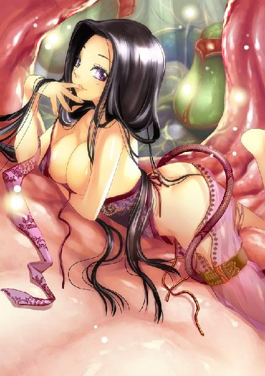
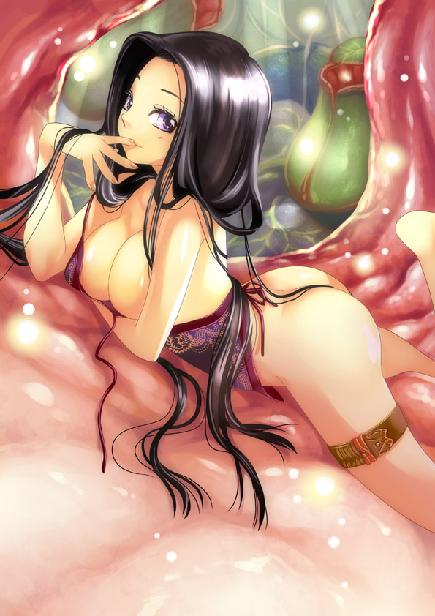
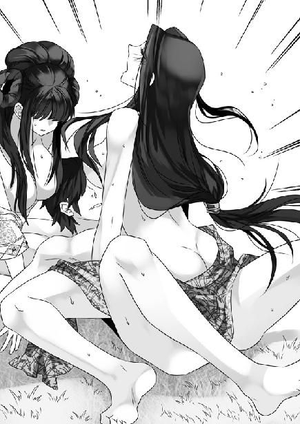
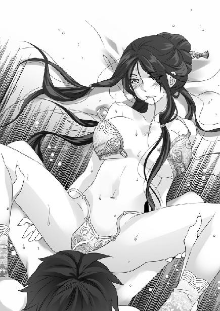

第13集·秦淮风流
建康篇（1/8）
出版日期：2010-08-06
【本集内容简介】
借由殇侯之手解除冰蛊之危，又得他指点修习内功的明路，程宗扬终于可以左揽凝羽右抱小香瓜过段好日子了。但谁知凝羽须与自己分离一年，静心疗伤，而小香瓜也被突然找上门的潘金莲带走。程宗扬只好带着小恶魔小紫和没有学坏的秦桧、还未叛变的吴三桂，前往晋国建康完成殇侯所托的经商之路！
常说魏晋风流，率性而为，萧遥逸说哭就哭，说骂就骂，才见面第二次就拉着程宗扬一起召妓，名士作风果然大不相同！只是从他口中得知岳帅第三个女儿的下落后，程宗扬越想越是头痛……
※ ※ ※ ※ ※

封面人物：小紫

彩插：小紫

插图：温泉双美

插图：张丽华
镌刻着龙纹的银壶在炉上发出“滋滋”的轻响，白雾从壶口袅袅升起。竹帘外，雨点从檐角和竹叶上滴落，传来淅沥沥的雨声，堂中光线渐渐暗了下来。
殇侯泼去残茶，用竹匙从纸囊中取出浓绿的新茶，放在一张白纸上，拂去细碎的茶末，投入紫砂壶中，然后拿起银壶，沏入沸水。他手极稳，沏入的沸水正与壶口平齐，卷紧的茶叶微响着舒展开来，丝毫没有溢出。
殇侯拿起紫砂壶盖，撇去壶口的细沫，盖好，用沸水淋在壶上。茶沫顺着壶身冲下，一股沁人心脾的茶香随即飘散出来。片刻后，壶身水迹干涸。殇侯用沸水淋过茶盏，重新斟了两杯，递了一盏给程宗扬。举止从容不迫，显然有大把时间等待他的回答。
程宗扬拿起茶盏喝了一口，然后苦笑道：“知道我身份的两个人都死了。殇侯确定要听吗？”
光线愈发暗淡，殇侯的身影仿佛墨色的剪影一样模糊不清，只有指上翠戒一点碧绿的光泽，不停流动。
程宗扬叹了口气，“我来的地方，确实跟你们这里不太一样。”
对于自己的经历，自己不是不想说，而是不知道该如何解释。
犹豫片刻，程宗扬道：“但殇侯把我当成天命之人，那就错了。我确实知道一些事情，可这个世界和我所知的相比，几乎完全改变了。比如六朝，我就不明白是怎么回事。”
“秦、汉、晋、唐、宋与昭南，是为六朝，”殇侯淡淡道：“共奉汉室为天子。”
程宗扬偏着头想了一会儿，“和战国七雄有点像，我知道的是秦后有汉，汉后有晋，然后是唐、宋，一个接一个。那个昭南，我连听都没听说过。”
殇侯道：“你可知六朝兴亡？”
程宗扬摇了摇头，“知道一点，但不那么详细。而且我说过，这个世界和我知道的几乎全然不同。就好比一盘棋，我看过一场终局，知道那一局谁胜谁负，但现在这局有太多落子和我所知的不一样。殇侯想知道这局棋谁胜谁负，我可一点忙都帮不上。”
“世事如棋，兴亡过手。棋局虽然不同，棋子总是那些而已。”殇侯慢慢饮了口茶，“你当日看到我手下的秦桧与吴三桂而为之色变，他们是什么人？”
程宗扬老实答道：“史上数一数二的大奸贼。”
殇侯拿着茶盏的手停在半空，片刻后皱起眉头，“秦、吴二人追随本侯多年，一个机敏灵动，一个忠直耿介，如何会是奸恶之人？”
程宗扬笑道：“一直跟着你当然是好人，他们想作奸人都没有机会吧。”
殇侯沉吟片刻，“秦吴二人秉性本有不足，秦桧灵敏有余，志浅易变；三桂血勇性激，易走极端。时移事易，不足为怪。但志节不移者，也大有人在。”
程宗扬连连点头，人的作为与环境息息相关，没有人是天生的大奸大恶。汴京城陷时，秦桧曾冒死上书，请求金军保全赵氏。吴三桂年轻时带着二十名家丁就敢闯入万军之中，血战救父，时称勇冠三军，孝闻九边。这两个人如果当时就死掉，留下的肯定是忠孝之名。不幸的是他们两个都活得长了点，曾有的忠义之行完全被后来的奸恶作为掩盖。
易地而处，把自己换到秦桧和吴三桂的位置上，未必会比他们做得更好。但如果换作文天祥和史可法，绝不会像他们一样为后世唾弃。英雄之所以为英雄，是因为能经得起考验的人太少。说到底，自己只是个凡夫俗子，难以抗拒太多的诱惑和欲望。
殇侯往银壶中重新添入泉水，用铁箸拨动炉内的炭火，似乎陷入沉思。程宗扬游目四顾，堂外夜色渐浓，墙内一丛翠竹犹如浓墨绘成，廊外种满兰花，绿叶葳蕤。从外面怎么也难以察觉这个看似荒蔽的山村，竟有这样幽雅深邃的景致。
程宗扬一拍额头，从背包中取出一张白纸，“这信是给殇侯的吧？咦？怎么还没字呢？”
烛光亮起，映出一页素纸。这是从黑鸦使者身上得到的信笺，原来以为是送给鬼巫王，现在看来，殇侯才是真正的收信人。
殇侯拿起茶盏，微微一晃，然后泼在笺上。空无一字的素笺立刻显露出满纸龙飞凤舞的字迹，仿佛刚写成一样，墨迹淋漓。
殇君钧鉴：
当日一别，已垂廿载。昔年之谊，萦萦在心。圣教巫毒两支，殇君独得毒宗之秘。往昔岳贼肆虐，吾宗大树飘零，星流云散，忧及殇君，思虑满怀。
闻君驻节南荒，如今枝盛叶繁，愚兄不胜欣悦。令徒鬼巫，天资明敏，心志坚毅，堪称一时雄强。愚兄僻居大泽，愧无俊杰之士，每思至此，常怀耿耿。甲子立秋，乃吾教廿载共祭。若得殇君麟趾相降，愚兄自当扫榻相迎。拳拳之心，君当念之。
文后没有落款，只有一个黑魔海的标记。
程宗扬道：“什么廿载共祭？”
殇侯拿着那张信笺，一言不发，良久道：“每二十年，黑魔海毒巫两宗要共同祭祀历代祖师，决定教中要事。”
信中文字虽然不多，但写得情真意切。程宗扬笑道：“原来黑魔海那位是殇侯的师兄，他写得这么客气，看来对殇侯很佩服啊。”
殇侯指尖一弹，那张素笺飞入炉火，化为灰烬。他淡淡道：“佩服不敢当，我这位师兄，一辈子最大的心愿就是想让我死。”
程宗扬一怔，“不会吧？”
“你以为他信中是在与我客气吗？”殇侯冷冰冰道：“二十年前，他设下计谋，与人围攻本侯无果。结果本侯离开黑魔海，没有死在他手下，所以他心怀耿耿、思虑满怀。他引诱阿巫投入黑魔海，让我最好的弟子死无葬身之地，所以嘲讽他是一时雄强。他称自己手下没有俊杰之士，邀我甲子立秋前去共祭，其实是说他实力已经恢复，问我敢不敢去送死。”
殇侯冷冷道：“看来当日姓岳的没有把他们斩尽杀绝。如今羽翼丰满，又敢向本侯挑衅。”
程宗扬没想到这封信背后还隐藏着这么多的恩怨。殇侯的卫队自己见过，真打起来，整个南荒都没有对手。而且殇侯与云氏商会关系不浅，看他的举止作派，在六朝的背景也极深。已经被岳帅打残的黑魔海有什么本钱敢向他挑战？
程宗扬忍不住问道：“黑魔海不是被岳帅连根拔起了吗？难道现在的势力还很强？”
殇侯拿过一条丝帕抹净手指，随手将丝帕投入炉火中。
“当日与武穆王一战，我那位师兄身边能逃生的不过四五人。你说他实力如何？”
程宗扬估算了一下，黑魔海被岳帅扫荡是十八年之前，逃生的不过四五人，每人收十名弟子，也不过四五十人。四五十人可一点都不多，不用说太乙真宗那种大教，就是大一点的商会，也不只这么点护卫。十八年的时间并不长，程宗扬还记得，小香瓜这样的水准就花了九年时间。如果他们招的弟子都是十岁左右，现在二十八岁，按正常进度推算，能不能打过易彪都难说。难道黑魔海有什么速成的方法？
程宗扬道：“黑魔海培养一个高手要多长时间？”
殇侯反问道：“什么是高手？”
程宗扬苦笑道：“你问我，我问谁去？行了，老头儿，你就别卖关子了。给我说说你们这里武功等级是怎么划分的？凝羽说我的修为在二三级之间，我觉得自己已经很不错了，这个算不算高手？”
殇侯道：“天下武学渊源各异，以修为深浅划分，可分为九级。五级以上者方可称为高手。你从武二手中学得白武族的五虎断门刀，又修习太一经……”
“什么太一经？”程宗扬打断他，“我练过太一经？我自己怎么不知道？”
殇侯大有意味地看了他一眼，没有回答他的疑问，只道：“你如今的修为较之凝羽还犹逊一筹，不过是平常而已。”
凝羽是四级上的修为，小香瓜与自己不相伯仲，吴战威和易彪也不比自己高太多。看来一般行走江湖和军伍中的好手，大都是这个水准。
眼前的殇侯虽然气度凛然，但他扮成朱老头跟自己混了一个多月，大家可以算是熟人。程宗扬也不客气，揶揄道：“就算我是三脚猫，你那位最好的弟子可跟我打了个平手。侯爷调教弟子这水准，似乎不怎么样啊。”
殇侯哼了一声，“若非鬼王峒的积尸之气，哪里还有你说嘴的机会。”
“你说那些死气？”程宗扬抛出心底的疑惑，“王大将军说我身上的生死根能化死为生，但只是把死气转为生机，不能直接转为内功修为。为什么我在鬼王峒吸收的死气就能直接施展出来？是不是王大将军说错了？还有，死气和生机是怎么回事？”
殇侯道：“你吸收的那些死气，如今还在吗？”
程宗扬摇了摇头，离开鬼王峒后自己尝试过凝炼九阳真气，但凝炼出第二个光球就吃力万分，第三个说什么也聚不起来。
殇侯忽然道：“人生前与死后有何差别？”
程宗扬一怔，然后说道：“差别那就大了。死人不能哭不能笑，不能吃不能喝……”
“活人无非是皮肉骨血，死人也无非皮肉骨血，”殇侯道：“你告诉我，活人与死人差别在何处？”
程宗扬哑口无言。从物质上说，死人和活人都是一堆化学元素，不见得死人就比活人少了什么物质。死人比活人只少了一样东西：生命。但生命是什么？
程宗扬试探道：“你说的是生机？”
“是气。”
殇侯在案上写了一个“氣”。
“这才是修行者所言的气字。气者，无形而有形。眼不可见，耳不能闻，鼻不能嗅，舌不可尝，手不可触，是为无形。有形者，举手投足，哀哭歌笑，无不为气所使。一旦气尽神散，便手不能举，目不能视。此时气断神绝，真阳外溢，皮肉骨血未变，少的便是这个气。”
程宗扬明白了一些，死人和活人差的那一口气，原来不是呼吸的空气，而是看不到摸不着的气。有了它就是有生命能跑能跳的活人，没有它就是死人。
“那么死气，就是人死的时候从人身上散失出来的？”
“不错。无论修行之人，还是鬼狐精怪，一生汲汲以求的，也就是这个气字而已。”殇侯上下打量了他几眼，“你这小子身上竟然有生死根，能捕捉人死时散出的元气。哼哼……”
程宗扬不满地说道：“侯爷，你要眼红，也让雷劈一下试试。”
殇侯哼了两声，才悻悻道：“命之将绝，气从人体流散，是为死气。这种气息很快会化入天地万物，一旦死气郁积，多有凶煞妖魅，所以有凶地、凶宅。”
“我的生死根，就是能把这些东西都转化成你说的气，”程宗扬道：“可你说了这么多，还没说我在鬼王峒如何将它直接变成真气，把你最好的徒弟都打得灰头土脸呢？”
殇侯大袖一拂，指向南方天际，“星辰分野，南荒为南宫朱雀，而鬼王峒便是朱雀之眼。”
程宗扬想起他说过，南宫朱雀七宿中，鬼宿位置正是朱雀的眼睛。鬼宿中间似云非云，似气非气，称为积尸气，而它对应的又是鬼王峒……
“鬼王峒上应天象，平常很快流失的死气在峒中积蓄下来，所以峒中会死气弥漫，磷火丛生。”殇侯道：“不过你在鬼王峒吸取的死气与外界不同，虽然能转为真气直接施展，却无法化为己用，提升修为，此所谓有所得必有所失。”
难怪自己在鬼王峒吸收死气像喝可乐一样轻松，不过自己平常吸收死气，为什么又是头痛，又是恶心，厉害的时候还会呕吐，感觉就像吃了脏东西一样？
程宗扬把自己的疑惑说出来。殇侯露出朱老头的嘴脸，笑眯眯道：“是不是和怀孕很像啊？”
“你去死吧！”
殇侯捋了捋胡须，“人死之时，悲、怒、怨、忿尽数散出，你要若无其事才奇怪呢。”
程宗扬小心翼翼地问道：“你说死气郁积会有凶煞，会变成凶地、凶宅，我不会有什么问题吧？”
“你觉得有什么异样？”
程宗扬沉默了一会儿，“杀人本来应该很紧张，很害怕，总之心情激动才正常，可我杀死对手的时候，一点感觉都没有。甚至看到有人杀自己的亲生母亲，我都没感觉。这样是不是有点变态啊？”
殇侯叹道：“你有生死根的那一刻起，死亡对你而言已不足惧。”
程宗扬还要再说，殇侯打断他，“你此番来找本侯，所为何事？”
程宗扬怔了一会儿，叫道：“冰蛊！”
只顾说话，差点把这件要命的事给忘了。
“老头儿，你还会解蛊？”程宗扬看着他拿出炉后盛水的橡木桶，往里面倒了一碟白色的粉末，一点都不当回事地随便搅着，有些不放心地警告道：“我就一条命，你可别胡来啊。”
殇侯翘起胡须，须下那颗珍珠左右乱晃，气哼哼道：“客气的时候叫君侯、侯爷，不客气的时候就叫老头儿——本侯的身份岂是让你乱叫的！”
“行了。我没叫死老头已经给你面子了。啧啧，你还真是装龙像龙，装狗像狗啊。朱老头的嘴脸一看就让人怒从心头起，恶向胆边生，恨不得抽你几个耳光才过瘾，怎么练出来的？”
殇侯嘿嘿一笑，“你怎么知道哪个才是真的我？”
他表情一变，虽然身着华服、头戴玉冠，活脱脱就是朱老头的面目，就像捡了华丽衣服穿上的乞丐。
程宗扬道：“谢艺说你身上有佛门的功夫，你不会真当过和尚吧？”
殇侯叹道：“当和尚那段日子，是我此生最轻松的时候啊……”言下不胜唏嘘。但程宗扬还没来得及感动，紧接着他就嘿嘿一笑，“小程子，把桶里的水喝了吧。”
程宗扬倒抽一口凉气，“老头儿，你露出这样的嘴脸，我怎么觉得脖子后面直冒凉气呢？不会是又想害我吧？”
殇侯亲切地说道：“本侯什么时候害过你了？莫担心莫担心，冰蛊这种雕虫小技，本侯举手便可破去。”
程宗扬嘀咕道：“这不会是你的洗脚桶吧？”说着他拿起橡木桶，满满喝了一口，然后“噗”地一口喷了出来。
“呸呸呸！”程宗扬叫道：“杀人啊！放了这么多盐！”
殇侯笑眯眯道：“本侯知道你要来解冰蛊，才备了这些上好的精盐，足有一斤三两。别怕别怕，只要喝下去，你肚子里的冰蛊就大虫化小，小虫化了。”
程宗扬一咬牙，捧着木桶，把里面的盐水喝了个干干净净。
“坐好！”
殇侯低喝一声，一瞬间须发飞扬，流露出逼人的气势。那只戴着翠戒的手掌伸来，拍在程宗扬腹部。
程宗扬浑身一震，只觉一股深入骨髓的寒意从他掌中透出，周身的血液都仿佛凝固。程宗扬狠狠打了个冷颤，刚喝下去的水似乎在胃里迅速凝结成一个硬梆梆的冰团。他咬紧牙关，身体禁不住战栗起来。
片刻后，殇侯收回手掌。程宗扬立刻弯下腰，直着喉咙开始呕吐。
已经凝结成冰块的咸水从他喉中一块块滚出来，像石子一样掉在地上不停滚动，隐约能看到冰块中细小的蛊虫蠕蠕而动。
看着程宗扬狼狈的样子，殇侯得意地捋着胡须，“咸水结成冰，比寻常冰块更冷。若非如此，怎能把这些蛊虫从你血中诱出来？”
“呕……”程宗扬喘着气道：“死老头！你敢阴我，呕……咳咳，一碗水就够用，你让我喝半桶！”
“这才吐得干净嘛。”殇侯神情自负，神采飞扬，得意地说道：“若非本侯的玄冰掌收发自如，怎么能使出这般巧妙的破蛊绝技！”
“呕……”
程宗扬用了一顿饭时间，才把半桶盐水吐了个干干净净，喉咙像被冻伤一样又冷又痛。
纠结自己多日的冰蛊就这样轻易解除，程宗扬反而有些不敢相信。良久，他喘了口气，把那些聚满蛊虫的冰块踢到一边，然后喝了盏热茶才驱走身上的寒意。
殇侯捡起一块冰块在烛火下审视片刻，“给你下蛊之人，心肠不是一般的歹毒啊……”
程宗扬摸摸颈后的烙痕，悻悻道：“那妖妇，总有一天，我要她好看！”
殇侯道：“五原城一个寡妇，要处置她还不易如反掌。”
程宗扬心里一动，这老头怎么突然发起好心，透出要帮自己收拾苏妲己的口气？他一门心思找什么天命之人，肯定不会是觉得用高压包电人很好玩吧？
程宗扬笑道：“要对付她，我一个人就够了。”说着他岔开话题，“如果说高手，武二郎算一个吧？”
殇侯毫不在意地说：“武二可以算一个。但商队真正的高手只有一人。”
“谢艺？”
“不错。”殇侯道：“他修为已臻于六级，达到通幽的境界，已可上窥第七级归元之境。如果他不是四处寻访周游，而是潜心修炼，足以称雄一方。”
谢艺的功夫没话说，但称雄一方是不是有点过了？第六级比自己只高三级，似乎也没高到哪儿去……
程宗扬道：“第六级就这么厉害？”
殇侯正容道：“世间习武者何止千万，但能修炼到第五级坐照之境的少之又少，绝大多数人终其一生也是五级以下的修为。谢艺若能修至归元之境，天下能和他比肩的，不过百余人而已。”
程宗扬疑惑地说道：“修行不就是闭着眼让真气在经脉间打转吗？为什么练到第五级的这么少？”
“雨停了。”殇侯望着窗外，然后站起身，“来，陪本侯走走。”
※ ※ ※ ※ ※
暴雨过后，天际乌云散开，现出满天星斗。藤枝叶影间，一条鹅卵石铺成的小径蜿蜓伸向前方，掩藏在绿叶下的房舍寂然无声。
雨势虽大，石径上却没有积水。殇侯双手负在身后，缓步而走，化身朱老头时佝偻的腰背此时挺得笔直。宽袍大袖，玉冠华带，气度非凡，让人怎么也无法把他和那个猥琐的朱老头联想到一起去。
“修行岂是易事。”殇侯缓缓说道。
“以常人论之，六岁学艺，三年方可筑基，五年内视，十年生象。这便是十八年光明。到第四级，资质平庸者要花费二十年，甚至更多。以十五年论，六岁学艺，苦练不辍，到第四级便是三十九岁。世人寿命有限，只有少数坚毅之士能在六十岁时达到第五级境界，如此便可称强者。再往后每晋一级都要数十年光阴，即便长生不死，要练到第八级也是一百四十岁年纪。”
居然要花这么长时间？
“不对啊，”程宗扬讶道：“武二年纪也就三十来岁吧，按你说的顶多是第四级，他怎么有第五级的修为？”
“武二天生虎威，本人又秉性刚强，进境远较常人为快。可惜他没有明师传授，否则成就不会弱于谢艺。”
程宗扬道：“听你这么说，武二好像是个习武的天才。”
“何为天才？”
程宗扬一怔。
“所谓天才，不过是坚毅过人。寻常人一日十二个时辰，睡觉四个时辰，饮食琐事耗去两三个时辰，修行时心猿意马，或看阶前春草，或观天际浮云，玩虫逗蚁不一而足。一日之中，真正用在修行上的时间不过一两个时辰而已。像武二郎，每日练功至少在六个时辰，同样是一年，进境较之常人何止三四倍。”
程宗扬道：“你是说用功？有没有那种一学就会的天才？”
“你还未曾明白吗？”殇侯叹道：“天才不过是你愿意为某件事用心花费的时间罢了。便以绘画为例，每日花一两个时辰随手涂抹，无可无不可，便是庸人之为；每日坐足四个时辰，有一个时辰用心，穷十年之功，可以为画师；每日能用心绘上四个时辰，十年下来便是天才了。”
程宗扬不服气地说道：“那天赋就没用了吗？”
“当然有用！各人天赋不一，有些人辛苦一生也未必能成为画师，但若是弃画学书，同样的努力也许就能成为天才的书者。”
程宗扬思索了一会儿，不得不承认殇侯说的有道理。
平常人的兴趣只是暂时的，像达芬奇、莫扎特那样的天才，每天脑子里都想着绘画、音乐，同样是一年时间，他们专注于艺术的时间每天能高达十个小时，合计下来有四千个小时，而平常人每天专注的时间大概只有一两个小时，一年下来才五六百个小时，相差何止数倍。
说到底，天赋每个人都有，而人与人在生理上并没有太多本质上的差别。之所以不是每个人都能成为天才，差别只在于专注的程度和时间。但最难做到的，同样是专注。对于天才来讲，专注已经成为生命的一部分，无论做什么都比常人用心，这就是天才之所以为天才的原因了。
“有些人天资聪慧却无毅力恒心，终究一事无成。有些天资聪慧、毅力过人，却无名师指引，正如本该学书者却去学画，亦难有所成就。所以有所成就之人，天资、毅力、名师，缺一不可。”
程宗扬拍了拍脑袋，“我看南荒也有不少人才，但感觉都缺了点什么。像太乙真宗那样的名门大派，挑选的弟子本来就比别的高出一截，再加上名师指点、同门切磋，难怪会高手辈出。”
但程宗扬对黑魔海的疑惑更多了，“按照你的说法，黑魔海花十八年时间培养弟子，现在能练到第四级就可以烧高香了。就算他们运气特别好，十个弟子里就有一个天资、毅力都特别出色的，也就是第五级刚入门的水准，顶多能和武二爷有一拼之力，似乎不怎么厉害嘛。”
殇侯负手而立，望着头顶的星空，良久道：“我那位师兄，别有机杼也未可知……”
南荒的星空不像北方草原那样低垂，近得仿佛触手可及。这里没有被污染的空气，夜空透明度极高，每一颗星辰都分外清晰，衬着黑天鹅绒般的天幕，显得更加深邃辽远。
连殇侯也不知道黑魔海有什么手段，自己就不必费心了。程宗扬一边陪他观赏星空，一边问道：“老头，你说的那颗命星在哪儿？”
“无知小子，命星岂会天天出现。”殇侯教训一声，然后指着南方天空一簇暗星道：“那便是鬼宿，乃朱雀之眼。”
程宗扬仔细看去，那丛暗星中果然有一团朦胧的云气，就是星经上说的积尸气了。
殇侯指着满天星辰如数家珍，“那是南宫朱雀的轸宿和翼宿。往西便是白虎七宿：奎、娄、胃、昴、毕、觜、参。”
程宗扬有限的天文知识只能辨认出北斗七星和极星，听着殇侯侃侃而言，他不客气地讥讽道：“别说得那么嘴响，你的星象学真像你说的那么高明，也不会找到一百多个天命之人吧？”
殇侯被他捉住痛脚，老脸竟然微微一红，强辩道：“星象的学问浩如烟海，岂是你这无知小子所能懂的！哼！”
程宗扬笑眯眯道：“侯爷息怒，反正我是外行，你想怎么蒙就怎么蒙吧。不过侯爷对星象这么熟悉，你们这一支不会就是干这个的吧。”
殇侯道：“黑魔海分毒巫二宗，我们毒宗在武学之外，擅长各种药物。”
“怪不得君侯的尊号是鸩羽殇侯，”程宗扬道：“如果我没记错，鸩鸟是一种毒鸟吧，传说它的羽毛在酒中一划，再美的酒也会变成剧毒。不过这个殇字挺奇怪，我记得殇是死的意思吧？而且指的是死时还未成年……”
殇侯眼神陡然一厉。程宗扬从来没有见过他这样的目光，即使他装模作样吓唬自己的时候，也没有流露出如此深刻的痛意。
一个身影快步走来，他戴着文士巾，相貌文雅，正是自己曾见过的大奸贼秦桧。他躬身深深一揖，“君侯，北地有讯。”
殇侯起身欲行，程宗扬连忙叫道：“哎，太一经的事你还没跟我说呢！”
殇侯摆了摆手，“今晚说的已经够多了。此时即便告诉你也无益处，明日到堂中再叙此事。会之，”殇侯吩咐道：“他不是外人，你带他随意走走吧。”说罢大袖一摆，转身离开。
秦桧含笑朝程宗扬拱拱手，“程公子，请。”
程宗扬好奇地打量了他几眼。这个秦桧举止温文尔雅，脸上总带着一丝谦虚的笑意，让人一见就觉得可亲可近，哪儿有半分奸诈的样子。程宗扬心里嘀咕：难怪说大奸大恶之人，必有大智大勇呢。
“秦兄在这里不少时候了吧？”
“蒙殇侯不弃，在下追随君侯已经二十余年。”秦桧欣然道：“君侯十余年来苦心找寻天命之人，如今遇到公子，终于得偿夙愿。”
程宗扬道：“刚才我一直没问，殇侯找天命之人做什么呢？”
秦桧笑道：“君侯行事，非在下所能知。”
眼前这个秦桧虽然和自己知道的那个大奸贼有些不同，但胸有城府这点一模一样，从他嘴里肯定套不出话来。程宗扬只好打了个哈哈，“秦兄不用客气，殇侯也说了，我不是外人，自己随便走走就行。”
秦桧也不勉强，含笑道：“村后的山崖上有座七星连珠的温泉，景物颇佳，公子如有兴趣，不妨一游。会之告辞。”
等秦桧离开，程宗扬沿着小径一路前行。自己可真没想到朱老头竟然就是殇侯，他这两种形象差别也太大了。这老家伙深藏不露，连谢艺都看走了眼，以为他身上有佛门的功夫。谢艺有六级的修为，他该有多少呢？总不会超过王哲吧。
程宗扬脑中翻翻滚滚，升起无数疑惑。
鸩羽殇侯……这名号怎么这么古怪？
他以殇侯面目出现时，那气势是装不出来的，难道他真是王侯身份？
鸩酒……程宗扬心里琢磨着，好像是宫廷里暗杀才用的毒药，后面还有一个殇字，莫非他的家人是被鸩酒毒杀的？看来自己真得找云苍峰恶补一下这个世界的历史了。
“咦？”程宗扬仰起脸，叫道：“小香瓜？你在干嘛！”
“哎呀……”
乐明珠正爬在树上伸手去摘一颗水果，被他喊声吓了一跳，脚下一滑，顿时从树上跌了下来。
程宗扬一个箭步扑过去，张臂把乐明珠抱在怀中。小香瓜吓得脸都白了，手里还紧紧抱着那颗水果。
“这里有好多水果。”发现自己没有摔到，乐明珠立刻兴高采烈起来，“每一种都很好吃！”
程宗扬又气又笑，“你怎么跑到这里来了？他们呢？”
“祁大哥说他吃饱了，不愿跟我来。凝羽姐姐和叶阿姨出去了。哎呀！那会儿雨下得好大，我们差点就走散了。幸好有个姓叶的阿姨来接我们，她给我们拿了新衣服，还拿东西给我们吃。那烙饼比朱老头说的还好吃呢！喂，你见着朱老头了吗？”
小香瓜叽叽咯咯地说着，一边拉程宗扬到树上采果子。
虽然只分开一个时辰，程宗扬却感觉像分开了很久。他替小丫头拿着水果，然后随着她一同爬到树上。
“这一种最好吃了。甜丝丝的，吃到嘴里就化了。”
那颗果子程宗扬从没见过，形状有点像葫芦，色泽鲜红，远远挂在头顶一根手指粗的细枝上。乐明珠踏起脚尖，竭力伸长手臂去摘枝梢的果子，但她身材娇小，怎么用力都差了少许距离。
“大笨瓜！抱我起来啊！”
“你小心点。再掉下去，我可接不了你了。”
程宗扬抱住乐明珠双腿，小丫头倾过身体竭力把手伸到枝梢，摸住那颗果子。
小丫头身体倾斜，那只圆润的小屁股正翘在程宗扬面前，随着她的使力在裙中一扭一扭的。
程宗扬忍不住抱住她的屁股，在她滑嫩的臀肉上捏了捏。
“你别动！我都摘到了……哎呀！”
一股火热的气息透过衣物，却是程宗扬低下头，隔着裙子在自己臀上亲了一口。乐明珠身体一颤，臀间的菊蕾仿佛被人拨弄一样，生出异样的感觉，连忙惊叫着挣开。
程宗扬双手抱着小香瓜，两脚踩着一根不怎么粗的树枝。本来只是好玩，没想到她反应这么剧烈，被她一挣顿时失去平衡，抱着乐明珠一同从树上掉了下来。
“砰”的一声，两人摔进灌丛。幸好程宗扬已经摔出经验，百忙中还记得背部着地，把乐明珠托在身前。乐明珠充满弹性的小屁股坐在他胸口，发出一声古怪的破裂声，接着一股湿黏的浆液渗入衣服。
“我的水果……”乐明珠欲哭无泪地举起小手。
她好不容易才摘到那颗水果，被程宗扬恶作剧地呵了口气，本能地去捂住屁股，却忘了手里还拿着果子。结果程宗扬一转身，她从平跌变成直坐下来，正好把那颗水果挤得碎裂。此时果浆四溢，溅得自己满臀都是，连程宗扬也倒了霉，胸前沾了一大片汁汁液液的果肉。
“都是你！都是你！”乐明珠坐在程宗扬胸前，气恼地在他身上打了几拳，“我好不容易摘到，还没有吃呢！”
被小香瓜这样一闹，程宗扬心里那点阴影早消失得无影无踪，笑道：“只是碎了，还可以吃啊。”
说着他抱起乐明珠，尝了一口，“嗯！真的很甜！”
乐明珠趴在他身上，屁股翘起，鹅黄的裙子沾满水果鲜红的浆汁，湿漉漉贴在裙上。程宗扬抱住她的大腿，毫不客气地把脸埋在她圆翘的臀间，品尝着美味的果浆。那种暧昧的姿势使乐明珠顿时脸红起来。
程宗扬隔着裙子，戏谑地在她臀缝儿间吹了口气。
“呀！”乐明珠低叫一声，火热的气息钻进臀沟，被焚情膏改造得敏感无比的小屁眼儿像被烫到般收紧。她娇躯轻颤，身子像融化一样软下来。
抱着乐明珠香软的身体，这些天来的辛苦似乎都飞到九霄云外。程宗扬把她抱起来，手指轻轻在她臀间触弄，在她耳边唤道：“小香瓜……”
乐明珠不好意思地咬住嘴唇，过了会儿才红着脸说：“大坏蛋，你又要干人家屁股。”
“好不好？”
“都让你干过好几次了，还问我……”
程宗扬小声笑道：“我就喜欢看你答应的样子。”
乐明珠恨恨打了他一拳，然后垂下眼睛羞答答说：“好啦，你想干就干好了。”
“真乖。”程宗扬笑着在她粉颊上亲了一口，一边拉住她的衣带。
乐明珠推开他，皱眉道：“裙子上都是果浆，好难受。”
“有什么难受的？”程宗扬咬着她的耳朵小声说：“小香瓜可爱的小屁股上沾的又是果肉，又是果汁，就像一团白生生的果肉，干起来甜丝丝的……”
“我才不要，”乐明珠嘟着嘴说：“你在人家屁股里蹭来蹭去，把那些果汁果肉都干到人家屁股里面，好恶心。”
程宗扬放声大笑，被乐明珠拧了一把才住口，低笑道：“让你的小屁屁也吃水果还不好吗？”
乐明珠气恼地说：“你真恶心！你再这样，我就不让你干了。”
程宗扬哄道：“好了好了，我们去洗洗。对了，听说山上有个温泉，还是什么连珠的。走，我们到温泉插屁股玩！”
“讨厌！上次我都跟你说了，要说爱屁屁。”
程宗扬失笑道：“对对，是爱屁屁。”
乐明珠说插屁股不好听，坚持让他改成爱屁屁这种童稚气十足的说法。程宗扬笑道：“小香瓜最乖了，一会儿让我的大肉棒来好好爱你的小屁屁。”
※ ※ ※ ※ ※
天际只有一钩淡淡的残月，山间的密林在夜风中轻轻摇曳，发出潮水起伏般的声音。群星璀璨，宛如深蓝色天鹅绒上的珍珠，光芒闪耀，弥补了月色的不足。
“别拽我的亵裤……”
“反正要脱的。先脱了，一会儿方便。”
“有人看到……”
“人都睡着了，谁还会看到？再说你还有裙子呢……”
程宗扬把乐明珠抱在怀中，呵哄着翻起她湿漉漉的裙子，剥下她的亵裤。还没走到殇侯说的温泉，小香瓜已经被他逗得两腿发软。
苍松翠柏间露出一串清滢的水池，七个大小不一样的温泉，由高到低依次排列，仿佛一串不规则的珍珠嵌在山崖上。周围古木参天，粗大的藤蔓不知生长了多少岁月，藤身露出岩石般的质地，像石墙一样绕在池畔。
程宗扬跃上古藤，眼前一片淡淡的水雾在夜空下袅袅升起，一个女子浸在池中，黑色的长发飘浮在雾气氲氤的水面上。
乐明珠抱住程宗扬脖颈，软绵绵伏在他肩头。舒服得几乎要睡着了。她下身被脱得光溜溜的，被薄薄的纱裙包裹着，那只白滑柔嫩的小屁股在他手臂上滑来滑去，莹润之极。
发现池中有人，小丫头发出一声短促的惊叫，连忙按住裙摆。
程宗扬朝小香瓜慌忙遮掩的屁股上拍了一掌，“小笨瓜，是凝羽啦。”
乐明珠怕被人看到自己和程宗扬亲热的一幕，一边推他一边道：“放我下来……”
“放什么放！”程宗扬不理会小丫头的吵闹，抱着她合身跳入池中朝凝羽游去。
“哈，你也在这里！”
凝羽扬起脸，绽出一丝笑容。今晚缺少月色，她皎洁的玉脸上却仿佛有月光流动，夜色下露出姣丽的容颜。
“叶姨说，这里的温泉对我的伤势有好处。”
“哪个叶姨？哦，是那个老太婆。”
凝羽微笑道：“她年纪没那么老。”
“没那么老，还弄一脸皱纹——喂，你别乱动！她会治伤？”
“呀！”乐明珠低叫一声，小脸立刻红了起来。
程宗扬把手伸到她臀间，在她柔嫩的小屁眼儿上揉了一把。小丫头顿时浑身发软，当着凝羽的面，她愈发不好意思，又是难受又是委屈地咬着唇，身子却不敢乱动了。
凝羽看出乐明珠的羞涩，微微一笑，从池中站起身来。温热的泉水从她洁白的肌肤上滚落，溅入池中。夜色下，她曲线优美的胴体像白玉般晶莹，圆润的双乳、纤细的腰身、修长的双腿，玉体纤毫毕露。
凝羽拉起程宗扬的手放在自己乳上，然后翘起纤指，轻轻点了点乐明珠的鼻尖，无声地笑了起来。
她这样坦然，乐明珠倒不好意思起来，讪讪道：“这里水好热……”
“不热能叫温泉吗？”说着程宗扬板起脸，“小香瓜，你再扭，我就打你的屁股！”
乐明珠脸红得像苹果一样，虽然她已经很忍耐了，但程宗扬的手一点都不老实。她低喘着抗议道：“谁……谁让你总摸我屁股……”
“是你坐在我手上的好不好？别动，听凝羽说话。”程宗扬道：“叶老太婆的身份你知道了？”
“她没有瞒我。”
“她和朱老头两个装神弄鬼，打的什么主意……嘿嘿，她和朱老头的关系不简单啊，说不定有一腿。”
凝羽一笑，蹲下身子解开他的衣带。
程宗扬低声道：“你的伤势，不是不能和我做那个吗？”
“不妨的。”凝羽朝他妩媚地一笑。接着一只温润的小嘴含住阳具，轻柔地吞吐起来。
凝羽唇瓣带着淡淡的凉意，细致地在肉棒上舔舐，舌尖轻轻挑弄着龟头，每一丝接触都令人心动。
程宗扬挺直身体感受着她唇舌的温存。怀里的小香瓜脸涨得通红，却禁不住好奇地瞪大眼睛，看着凝羽的举动。
“她在亲你那里哎……”乐明珠怕凝羽听到，咬着程宗扬的耳朵，细声细气地表示惊叹。
※ ※ ※ ※ ※
凝羽外冷内热，她决定的事情从不顾及别人的眼色，程宗扬索性也放开怀抱，笑道：“羽儿，我们亲热一个！让小香瓜看看！”
乐明珠羞得连耳垂都红透了，“我才不要看！”
程宗扬捏捏她的屁股，笑道：“你是我的女人，凝羽也是我的女人，大家都做一样的事，何必你躲着我，我躲着你，一起做不是挺好吗？”
小香瓜不好意思地低下头，抗议道：“谁是你的女人……”
程宗扬板起脸，“怎么不是？不是我的女人，为什么让我干你的屁……”
“哎呀！”乐明珠连忙按住他的嘴巴，“别说！”
程宗扬挣开她的手，“看你凝羽姐姐多乖。好老婆，再吸深一点！”
凝羽嫣然一笑，伸长颈子，将整根阳具都吞入口中，用喉咙的软肉包裹着龟头，柔柔吞吐。乐明珠还是第一次看到女人为男人口交，又是惊讶，又是脸红，眼睛一眨也不眨地看着凝羽的动作。
凝羽毫不顾及乐明珠的目光，仿佛天地间只有自己和身前的男子，细致而温柔地舔舐着他的阳具。
良久，凝羽吐出阳具，双手抱着程宗扬的膝弯，把脸贴在他大腿上，像叹息般轻声道：“公子，莫忘了凝羽……”
程宗扬拨开她脸上的发丝，“怎么会忘呢？就是这个世界都毁灭了，我也忘不了。”说着他笑道：“你看小香瓜，都快羞死了。”
乐明珠鼓足勇气道：“我才不害羞呢。”
程宗扬笑道：“那好，让我摸摸你的小妹妹。”
乐明珠“哎呀”一声，连忙推开他的手腕。
凝羽一笑，反身双手按住池沿，身子像玉环一样向后弓去，接着下身挺起，那双修长的玉腿像玉扇一样笔直分开，露出股间湿淋淋的蜜穴，轻轻放在程宗扬掌中。
乐明珠没想到凝羽会这样把女孩最羞耻的部位展现出来，主动放到那个大坏蛋手里，一时间期期艾艾地说不出话来。
凝羽的配合让程宗扬在小香瓜面前大有面子，而乐明珠最后一点少女的矜持也在她的举动下逐渐散去。原来在这个男人面前，彼此的隐私和羞涩都没有必要。
白美的玉股间，那只敞露的蜜穴仿佛一朵鲜美的玫瑰，在程宗扬掌中娇艳欲滴。程宗扬轻轻摩掌着凝羽下体柔腻的花瓣，在乐明珠耳边道：“来，用你的小手，把我的大肉棒放到你凝羽姐姐的小肉洞里。”
乐明珠咬着唇，满脸通红，坚决地摇了摇头。
程宗扬指尖滑入小香瓜臀间，挤进她柔嫩的肛蕾，在里面戳弄几下。
乐明珠紧绷的身体立刻软化下来，乖乖扶起程宗扬的大肉棒。
“凝羽姐姐，你不要怪我啊，”乐明珠小声道：“都是这个坏家伙让我这样做的……”
凝羽蜜穴一滑，穴口顶住龟头。她昂起头，看着一脸得意的程宗扬，轻声笑道：“一会儿公子干你后庭，我可要帮他呢。”
小丫头有些难堪地咬咬嘴唇，“那你不许笑话我啊。”
凝羽蜜穴略显紧狭，乐明珠握住程宗扬粗大的肉棒，把龟头送入她鲜嫩的美穴中，忍不住赞叹道：“凝羽姐姐，你的腿真长，好漂亮。”
凝羽双腿挺直，像玉弓一样张开，白嫩的阴阜向前鼓起，盛开的蜜穴轻轻颤动着，将肉棒一点一点纳入体内。
乐明珠扶着程宗扬的阳具，手指不小心碰到凝羽下体柔软的蜜肉，连忙缩了回来。程宗扬像大灰狼一样狞笑一声，抓住乐明珠的手腕，把她的手掌放在凝羽股间。
凝羽娇美地一笑，敞开身躯用蜜穴套弄着程宗扬的阳具。乐明珠从来没有见过男女交媾的一幕，虽然晕生玉颊，眼睛却不禁好奇得发亮。
多日没有接触过凝羽的身体，那玉户仍和以前一样鲜美娇嫩。程宗扬挺身深深干进凝羽美屄内，龟头顶住她的花心。
“啊……”
凝羽低叫着足尖绷紧，她腰肢弯曲，浑圆的双乳倒垂下来，身体重心都放在下体。随着程宗扬的挺弄，蜜穴像湿透的玫瑰般一颤一颤，围绕着粗大的阳具微微收放开合，妙态横生。
乐明珠最初的羞赧此时都被惊讶和好奇所代替，眼神中还流露出一丝羡慕，“凝羽姐姐的身子好美呢……”
程宗扬引诱道：“这才是男女间最快乐最有趣的事，比爱屁屁还舒服……”
他一边说，一边手指沿着小香瓜滑腻的臀沟伸到她娇嫩的美穴间，在她柔腻如脂的蜜肉中轻轻拨弄。
乐明珠连忙去拦，却被他拉住手掌，把她指尖一并伸进细软的嫩缝儿间。乐明珠面红耳赤，一手被迫抚在自己下体，一手放在凝羽股间两人交合的部位，感受着她正被那根大肉棒干得不住颤动的嫩穴。
凝羽蜜穴很软，那两片娇艳的花瓣被粗大的肉棒撑得翻开，中间一片红嫩的蜜肉又软又腻，像熟透的果肉一样，包裹着那根坚硬而火热的阳具。
程宗扬指尖塞进穴口，让乐明珠触摸她被侵入的蜜穴，在她耳边轻声唤道：“小香瓜……”
乐明珠穴口已经湿了一片，她体温比凝羽高了许多，股间一片湿滑，脂玉般的肌肤又软又热，香暖动人。幸好她灵台还保持着最后一点清明，可怜兮兮地央求道：“不要……会死的……”
程宗扬只好放弃进一步的打算，“我摸摸总可以吧？”
小丫头把脸扭到一边，双腿却乖乖分开，露出自己处女的美穴。程宗扬在她唇上狠狠亲了一口，笑道：“羽儿！我们来换个姿势！”
程宗扬坐在泉池边沿，把乐明珠横抱在怀中。凝羽双腿张成一字，对着他怒胀的阳具坐了下来。凝羽蜜穴已经湿透，穴内滑腻之极，雪臀一沉便将肉棒纳入体内。她将花心送到程宗扬龟头上，轻轻研磨。
程宗扬经脉间气流一动，习惯性送出真气，在她体内轻轻一触却折了回来。
凝羽摇了摇头，然后微笑道：“今晚让我来好好服侍你。”
程宗扬虽然纳闷，也没有十分在意。凝羽长发披在身后，凹凸有致的玉体跨在自己腰间，妩媚地起落着，那只娇美的蜜穴洒下淋淋漓漓的淫水，在肉棒上发出迷人的轻响，美妙动人。
程宗扬温香软玉在抱，毫不客气地拉开乐明珠湿透的衣衫，一手抚玩着她丰硕的乳球，一手在她股间拨弄。乐明珠像只小羊羔一样，软绵绵躺在他怀中，那对又白又大的豪乳仿佛一团香软的暖玉，在他掌中不断变形。
程宗扬含住她红嫩的乳头，用齿尖轻轻吸咬，手指伸进她阴部的裂缝中，将她密闭的阴唇分开，以指尖轻轻戳弄。
乐明珠闭着眼睛，鼻尖渗出细密的汗珠，红唇抿紧，拼命忍受着体内越来越强烈的冲动。
凝羽子宫中阴寒的气息不断溢出，程宗扬火热的阳具插在穴内，带来浓浓暖意。她动作渐渐加快，忽然身子一颤，蜜穴夹住阳具，有节奏地抽动起来。
程宗扬揽住泄体的凝羽，在她唇上轻吻一口，然后笑着捏了捏乐明珠圆翘的乳球，“小香瓜，该你了。”
“唔……”乐明珠懵懂地睁开眼。
凝羽起身，“啵”的一声将阳具从体内拔出，然后掠了掠发丝，把乐明珠从程宗扬手中接过来，浅笑道：“别忘了你答应过我的。”
乐明珠小声道：“凝羽姐姐……”
凝羽一手托着她的腰身，一手分开她雪嫩的臀肉，低笑道：“妹妹的后庭花真可爱。圆圆的，又红又嫩，看起来好软呢。”
乐明珠嘟囔道：“都是那个坏家伙，用他的大肉棒插来插去，把人家的屁眼儿都干软了……”
凝羽掩口娇笑，她依在池旁的石上将乐明珠抱在怀中，笑道：“乐妹妹身材真好，难怪他抱着你时肉棒比往常都硬呢。”
程宗扬叫道：“不要胡说啊，我一直都是很硬的！”
凝羽笑道：“乐妹妹，用你的小屁眼儿让他得意一下。”
乐明珠皱起鼻子，不情愿地说：“每次干我屁眼儿，他都得意死了。”
“谁让妹妹长得美呢？”凝羽托起乐明珠的下巴，由衷道：“乐妹妹长得真美……”
小丫头肌肤像新鲜的牛乳一样洁白，光溜溜的丰乳圆臀，诱人之极。程宗扬扶着她圆翘的粉臀，身体往前一送。
“呀！”乐明珠脸上露出一丝痛楚。
凝羽道：“你轻一些。”
程宗扬顶住乐明珠的屁股，“小香瓜，屁股翘起来一点。”
乐明珠只好翘起屁股。凝羽伸出双手抱住乐明珠的臀肉，将她雪臀分开，露出柔嫩的肛洞。
乐明珠拧紧眉头，圆润的雪臀被肉棒顶得凹陷下去。
“哎呀……好痛……”
她臀沟内淌满淫液，又湿又滑，这时一扭，程宗扬阳具顿时滑到一边。他又好气又好笑，“又不是没干过，还痛什么。”
乐明珠委屈地说：“本来就很痛嘛。”
凝羽伸出手扶住程宗扬的阳具，将那只又硬又大的龟头放在少女娇柔的嫩肛上，然后用指尖按住她的肛蕾，轻轻揉弄着剥开。
乐明珠羞不可抑，在凝羽的揉弄下，屁眼儿热热地生出异样的感觉，像蜜糖一样软化下来，一点一点被阳具侵入。
屁股中柔软的肉孔被手指轻轻剥开，让身后那个可恶的家伙用他的大肉棒一点一点塞满。忽然充满弹性的屁眼儿一紧，硬梆梆的龟头捅入体内，屁眼儿被龟头胀紧，仿佛要裂开一样。
和男人一样，大多数女人都不喜欢与同性接触，但乐明珠从小在光明观堂和几个小师妹亲密无间，睡觉都要挤在一起，几个小丫头叽叽喳喳，半夜都睡不着，玩闹惯了。凝羽性子冷淡，却很喜欢乐明珠的活泼可爱，尤其今晚与平常不同，更是由着程宗扬胡来，让他尽情享受了双美相拥的快意。
两具赤裸的胴体纠缠在一起，温暖的泉水像丝绸一样轻柔。水面雾气蒸腾，小香瓜白美的雪臀被雾气浸得又湿又滑，细腻如脂的臀肉散发出水果一样的甜香。
程宗扬挺起阳具在小香瓜臀间越干越深，直到整根肉棒都捅进她柔嫩的肛洞内。乐明珠颦紧的眉头松开，白生生的屁股被大肉棒干得翘起。她伏在凝羽身上，圆滚滚的双乳与凝羽乳房贴在一起。她乳房尺寸比凝羽大了许多，乳头却比她小巧，乳晕色泽更浅，呈现出稚嫩的淡红色，此时硬得像石子一样。
程宗扬腰身不住挺动，动作由慢到快，在小香瓜臀间尽情抽送。比起凝羽的美穴，小香瓜屁眼儿更加紧窄，肛洞周围一圈嫩肉紧紧箍在阳具上，充满弹性。她咬着唇，乖乖被他插着屁眼儿。每次阳具挺入，那小屁眼儿都情不自禁地收紧，仿佛要将他的阳具拉进肠道深处。
在小香瓜臀内挺动了一盏茶的时间，程宗扬托起凝羽修长的玉腿，把她双足放在肩上。凝羽与乐明珠搂抱在一起，她双腿一张，乐明珠双膝也被迫分开，腹下毛发细软、白嫩透红的美穴敞露出来。
程宗扬在心里骂了凤凰宝典一百多万遍，然后从小香瓜臀间拔出阳具，肉棒向下一沉，干进凝羽穴内。
乐明珠被他一轮猛攻，干得几乎喘不过气，这时才有了片刻喘息。凝羽身体微微昂起，她蜜穴湿滑无比，肉穴尽头那枚软软的花心与龟头一触，被挤得凹陷下去，像一张小嘴浅浅含住龟头。
两枚肉孔各有各的妙处，程宗扬一连干了几十下，干得凝羽娇躯轻颤，又换到小香瓜的屁眼儿中。他阳具沾满淫水，干起来比刚才更加湿滑顺畅。小屁眼儿紧紧夹住肉棒，抽动间发出“叽叽咛咛”的腻响。
小丫头这会儿浑身骨酥体软，软绵绵趴在凝羽身上，在程宗扬的抽送下发出“呀呀”的低叫。
漫天星辰高悬在幽深的夜空中，泉水从山崖上蜿蜓泄下，最高处的泉池热汽蒸腾，每下一级，温度就降下几分，到此时已经温暖适中。
程宗扬在两具女体中轮流进出，干得两女淫液泉涌。乐明珠跪在凝羽腰间，柔嫩的肛洞被阳具干得软腻无比。程宗扬拔出阳具挺进凝羽体内，凝羽顺从地挺起下体，让他在自己蜜穴内抽送，一边用纤指拨弄乐明珠圆张的嫩肛。
乐明珠玉颊红晕迭生，她昂起头，胸前一团丰腻的乳房被程宗扬抓在手中恣意爱抚，另一团雪乳白光光悬在身下，不住摇晃，红嫩的乳头不时与凝羽翘起的乳尖碰在一起，艳态横生。
“呼……”程宗扬长吐一口气，在凝羽体内尽情喷射起来。
凝羽已经被他干得高潮迭起，勉强翘起圆臀，用花心顶住龟头，让他射在自己体内最深处。
乐明珠屁股被程宗扬腹部压住，感觉到他射精时的律动，不由咬住手指，半晌才小声道：“你射得好多……呃，我屁眼儿都让你干麻了……”
程宗扬拔出阳具，刚射过精的肉棒一挺，疲态尽去，又显得狰狞起来。
“小香瓜，现在该你了……”
“哎呀，不要……你已经干过了……啊……”
程宗扬毫不客气地按住乐明珠，抱住她的雪臀，把刚射过精的阳具干进她屁眼儿中，在她肠道内大力抽送，把小香瓜干得呀呀直叫。
※ ※ ※ ※ ※
空山新雨后，空气分外清新。
程宗扬掀帘出来，只觉浑身精气十足，就是来两只老虎也能打死，还不耽误吃早餐。
“老四，这么早？”
祁远叼着一根柳木细枝，正在漱口。这里没有牙膏牙刷，人们用来洁齿的工具什么都有。富贵人家用苦参洁齿，平常还要含鸡舌香，谈吐时浓香馥郁。平常人用青盐擦牙，还有人用一种马尾制成的小刷，配合以茯苓等药材煮成的牙膏。穷人一般用剥了皮的柳枝，或者嚼甘草洁齿。程宗扬试过几次，发现效果并不差。
程宗扬也折了根柳枝，叼在嘴里低声道：“你鼻子最灵，瞧出这儿的不一样了吗？嘿嘿，那个朱老头……”
程宗扬还没说完，就看祁远朝自己一个劲儿地挤眉弄眼。他回过头，只见那个叶媪正站在自己身后不远处。
程宗扬一点都不脸红，直起腰道：“喂，昨天你话说了半截，让我一夜都没睡好——你说我过几天就不用来了，是什么意思？”
叶媪神态从容地说道：“你把真气运行到手太阴、手少阴、手厥阴三经，阴维、阴跷二脉。”
人体十二正经有六条阳经和六条阴经，分别为手三阳、手三阴和足三阳、足三阴。阴维和阴跷属奇经八脉中的两脉，王哲传授给自己的九阳神功侧重于六条阳经和阳维、阳跳二脉，很少运至阴经。而凝羽的功法则侧重于阴经，程宗扬对此并不陌生，当即催动丹田中的气轮，在这五条经脉中运行了一遍。
“这有什么啊。哈哈……”
程宗扬笑声未落，叶媪衣袖飞起，一掌玉蝶般拍在程宗扬胸口。
程宗扬左手一张，抓向她的手腕，右手已经抓住匕首。叶媪击来的力道并不强劲，程宗扬有十成把握能拧住她的手腕，给她一个好看。谁知她掌风袭来，自己真气只运行了一半，胸口就如受雷殛，几条阴经同时一震，潜伏在其中的阴寒气息汹涌而出。一招都没递出，胸口就结结实实被叶媪拍了一掌。
劈开龙神头颅时它力量反噬的一幕再次出现。程宗扬丹田剧震，蛰伏在经脉中多时的阴寒气流像毒蛇一样蹿出，四处涌动，仿佛要将经脉撕得粉碎。
祁远没想到两人说动手就动手，愣了一下才跳起来去抢自己的刀。没等他出手，叶媪随手一拂，他就像滚地葫芦一样滚到一边。
程宗扬狼狈地弓着腰，嘴巴大张着，却一口气也吸不进来。
※ ※ ※ ※ ※
“明白了吗？”
叶媪抬手在他腰侧一撞，程宗扬才透出一口气，经脉中纷乱的气息逐渐收拢。
叶媪扬起下巴，冷冰冰道：“像你俩这样手拉手往死路上走的傻瓜，着实少有。去见殇侯吧。”
程宗扬喘了几口气，先把祁远拉起来，然后连忙跟在叶媪后面。阳光不断从走廊两侧透入，在叶媪衣衫上洒下斑驳的光影。叶媪双手平握胸前，步伐从容优雅，虽然此时年纪已经不轻，仍能看得出她年轻时绝美的风致。
千穿万穿马屁不穿，程宗扬先奉上一顶高帽，“叶姨走路时的姿态真是有气质，就像宫里的贵人。”
叶媪头也不回地说道：“不叫‘喂、喂’了吗？”
程宗扬干笑两声，“叶姨大人有大量，肯定不会跟我们小辈一般见识的。哈哈，我看殇侯也有点怕你呢。那次不知道你给他下了什么药，那老家伙差点拉死在路上。”
叶媪昂起头，一言不发。
程宗扬旁敲侧击道：“殇侯在南荒这么多年也挺不容易的，是吧？听说他在六朝也是大大有名的人物。殇振羽……这名字不大像真名啊？”
叶媪没有承认，也没有否认，就像没有听到一样，让程宗扬讨了个没趣。不过程宗扬心态倒很坦然，笑嘻嘻道：“凝羽说这里的温泉对她伤势有好处，是不是真的？如果是真的，我们就在这里多住一段时间，等她伤好了再走。到时候就得多麻烦叶姨你了。”
叶媪忽然停下脚步，转身看着程宗扬皱眉道：“凝羽没有和你说吗？”
程宗扬愕然道：“说什么？”
叶媪神情冷峻，“她经脉阴气过盛，早已积重难返，又累次受创，已经命悬一线。至少要在这里住上半年，细加调理，才有可能复原。”
程宗扬愣了一会儿，叫道：“怎么可能！她昨晚还好端端的，怎么让你一说就命悬一线了！”
“蠢材。”叶媪冷冰冰道：“孤阴不生，孤阳不长。别人给她下了个圈套，她就跳进去，居然能支撑到现在也是一桩奇事。如果不是饮了殇侯的碧阳茶，你此时已经是死人了。”
程宗扬想起凝羽昨晚的举动，心里越来越惊慌。昨晚自己和两女一直闹到四更，小香瓜的屁眼儿被自己搞了两次，还当着她的面干了凝羽的后庭。到后来凝羽已经体力不支还不肯拂了自己的心意，由着自己胡来。如果叶媪说的是真的，凝羽已经打定主意要留在这里，才不顾伤势和自己交欢。
“不行，我要找她去！”
“你去有什么用？也要在此地留半年？”叶媪寒声道：“有你在，凝羽还怎么疗伤？”
程宗扬叫道：“她是我的女人，难道我不在这里陪着？”
叶媪瞥了他一眼，“你能半年内不去找她吗？”
程宗扬哑口无言。
堂内传来一个充满威严的声音：“何人在堂外喧哗？”
程宗扬瞪了叶媪半晌，然后一掀帘子踏进堂内，没好气地叫道：“你们都商量好了，合伙来蒙我是吧？”说着拿起案上的茶盏，一口气喝干，龇牙咧嘴地说道：“喝这么烫的茶，小心以后得食道癌！”
殇侯看看叶媪已经离开，这才把板起的脸放下，嗔怪道：“小程子，你心里有火也不能对本侯撒吧？凝羽那姑娘，本侯瞧着挺好，留在这里养伤你还有什么不放心的？况且……”殇侯话风一转，傲然道：“她的伤势除了我这里以外，天下无人能治！”
程宗扬把茶盏一丢，不客气地说道：“你找天命之人，不会是找着好玩吧？还把凝羽留在这里当人质，以为我是傻子啊？”
殇侯怫然道：“我要留下你，就是一伸手指的事，还需要抓个女子当人质？小程子，你这也太小看本侯了。”
程宗扬叹了口气，“我这不是着急吗？好了老头儿，我知道你对我不错。不管我是不是天命之人，只要你觉得是，那就是好了。要我帮你做什么，说句话出来，能做到我就做，做不到我也没办法。”
殇侯饮了口茶，慢悠悠道：“本侯想开一家商号，让你帮我打理。”
程宗扬讪笑道：“就这么简单？小心我疑神疑鬼。”
殇侯点了点头，“我希望你这家商号能把宫廷的生意接过来。”
“六朝呢，你说的是哪家宫廷？”
“既然云氏总号在建康，就从晋国的建康宫开始。”殇侯淡淡道：“最后是洛阳城的未央宫。”
“未央宫不是在长安吗？”程宗扬一拍脑袋，“哦，现在长安城里是唐室的大明宫。你的目标就是汉室吧？侯爷大概不缺钱，那你想赚什么呢？”
“当然是天子之位！”殇侯停顿了一下，“还有吕氏一族的性命。”
“当皇帝？”程宗扬讶道：“你年纪不小了吧？还有这么远大的志向？”
“谁来做天子，本侯并不在意。但不能由窃国者来做。”殇侯沉声道：“你若想做天子，本侯可以帮你。”
“免了。”程宗扬一口回绝，“你让我接管天子的后宫吧，这事儿还可以考虑考虑。当天子还要治国呢，我才没这份闲心。侯爷，你可要想好了，这种事成功率连百分之一都没有，到时候做不成，可别怪我拿你的钱打水漂。”
殇侯一直神色冷峻，这时忽然露出一个熟悉的笑脸，亲切地称呼道：“小程子啊，你一开始就没打算用心去做吧？”
程宗扬嘿嘿一笑，“让你猜着了。我胆小，这种谋逆造反的事真的吓住我了。”
“小程子，我给你解了冰蛊，还救了你一命，你连个谢字都没有。这会儿还拿了我的钱不办事——欠本侯的人情就不用还了？”
程宗扬笑嘻嘻道：“大恩不言谢嘛。侯爷运筹帷幄，英明神武，想来也不会把这点小事放在心上。”
殇侯毫不介意地说道：“无妨无妨，你随意去做就行。”
程宗扬却怀疑起来，“侯爷，你有这么大方？我怎么没看出来呢？”
殇侯捋了捋胡须，“此诚天机，不可泄露。”
程宗扬摆出一个呕吐的表情，但也不再追问，转头道：“咱们该说太一经的事了吧？”
“天地浑沌未明，阴阳合而未分，是为太一。”殇侯道：“黑魔海自浑沌初开，鸿蒙未明，便以太一经为群经之首。此功法融合阴阳，探寻万物本源，寻找天地间最初的力量，化为己用。”
程宗扬皱起眉头，“这段话我好像在哪儿听过……凝羽！是凝羽的功法！”说着拍案道：“她说自己不知道名字，原来叫太一经！”
殇侯点了点头，“太一经涉及阴阳，历代修习者多用双修之法，这中间的差别，你可知道了？”
程宗扬想着另外一件要紧事，一时没有听清，“哦？”
殇侯露出“朽木不可雕也”的神情，“蠢材！凝羽所习的功法，不过是作为鼎炉的末技！”
“什么鼎炉？喂，你别瞪我，这玩意儿我真不懂。”
殇侯重重哼了一声，“男子以双修法修习太一经，必用一女子为侣。此女就如同一口炼丹的器具，供其养炼真阳、宣泄杂气，故称为鼎炉。”
程宗扬想起凝羽体内的寒气，不禁打了个冷颤。那混蛋竟然把凝羽当成练功的鼎炉，干完之后，还随意把有害的杂气留在她身体里面。
“西门庆！”程宗扬咬牙道：“他是黑魔海的人！我当初怎么没一刀干掉这家伙！”
“黑魔海的弟子？”殇侯饶有兴味地说道：“有机会，本侯倒要会会这位后辈了。”
“你去五原城找最大的生药铺就行……生药铺！”程宗扬突然大叫一声。
“便是药材铺，因售卖药材不作焙制，故称生药铺。有何不妥？”
“谢艺会来南荒就是从一间生药铺得到的消息。世间哪有这么巧的事？妈的！”程宗扬爆了句粗口，“黑魔海这帮家伙真毒！”
黑魔海的人有意把谢艺引到南荒，不用说，是准备对星月湖下手。而小紫是岳帅的后裔，黑魔海的人如果还在南荒，肯定不会放过她。现在鬼王峒没了，碧鲮族她也回不去，那死丫头一个人在南荒，周围都是敌人，可有她好受的。
程宗扬定了定神，“你说的差别是什么意思？”
殇侯道：“凝羽所学的功法不过是用来配合对方修炼太一经，真气所行经脉，与寻常不同。”
程宗扬点了点头，凝羽的功法确实很古怪，只不过眼下除了自己不大明白的九阳神功，根本没有什么可以比较的。
“所以，正如凤凰宝典只能传于女子，真正的太一经也只能由男子修习。”
程宗扬这时才想通，顿时倒抽一口凉气，“你是说我跟着她练的太一经，全都练错了？”
“何止是练错了！幸好你修习时间不过月余，若再练数日必会被体内积蓄的阴气反噬，非残即死。”殇侯傲然道：“若非遇到本侯，你就是变成鬼魂，也不知道自己是怎么死的。”
程宗扬却挂念着那个沉默的女子，“凝羽呢？她会怎么样？”
“她修习时日已久，积重难返，若想复原，除非废去武功。不过本侯传她疏导之法，可保她性命无忧。至于修为……终身无望练至六级以上。”
程宗扬紧张地思索着，听殇侯的口气，凝羽还有复原的可能。凝羽很少吐露自己的身世，但她一个羽族孤女，十几岁就被族人送给苏妲己当奴仆，又被苏妲己转手送给西门庆当鼎炉。现在她是自己的女人，再让她受一点委屈，自己的程字就可以倒着写了。
“你意思是说，就让她按着鼎炉那样练下去？这可不行！”
殇侯耐心地说道：“鼎炉之术虽是太一经末技，自有其不凡之处。以凝羽的资质，有生之年能否练至第六级，还在两可之间。她修习太一经末技，有望晋身高手之阶，又可以与你双修，让你晋身更高的境界，两全其美，何乐而不为？”
程宗扬摸了摸下巴，“你让我把太一经练下去？”
“正是！”
“你别忘了，我还练过王哲传我的九阳神功，这两门功夫一正一邪，你就不怕我练出什么毛病？”
“旁人自然不可，”殇侯抬指轻轻一点，“但你身上有生死根的异术。只需本侯传你太一经真正的修行之法，往后能修炼到何等境界，就看你自己的造化了……”
日色偏西，程宗扬长长吐了口气，从冥想中脱离。
自己现在才了解到殇侯说的名师有多重要。凝羽和武二郎虽然没有对自己藏私，但他们两个对内功修行都不怎么高明，许多地方他们自己也解释不清。
殇侯不愧是宗师级的人物，这方面的造诣比他的星象学高明百倍。在他的指点下，自己身上每一条经络都变得清晰无比。此时灵台一片清明，丹田中的气轮也愈发鲜明，那些组成气轮的细小星芒，每一颗都是旋转的细小光点，里面蕴藏的力量远比自己能够体会的更强大。经脉中运行的气息更加圆转如意，自己心念一动，真气便沿着经络瞬息而至，迅捷得令人难以相信。
一缕微风从窗棂透入，银壶升起的蒸气随之飘摇。程宗扬目光落在变幻的气流上，忽然一掌拍出。
白色的气流飞出一片刀锋般的微痕，掠向殇侯胡须下的那颗珍珠。殇侯低垂的目光微微抬起，那缕白气随即分成三缕细丝，在空中螺旋状绞成一股，闪电般反射回来，精妙之极。
程宗扬一掌劈出，那缕白气来势顿时一挫，然后弹起，仿佛一条灵敏的小蛇缠向他腕间。
程宗扬双掌齐出，将银壶的蒸气全推了过去，试图把它模糊掉，却见那团白气在空中一翻，完全脱离自己的掌控，幻化成一只展翅高飞的白鹤。白鹤盘旋而起，一直升到屋顶，然后从头部开始一点一点消失在空气中。接着一根雪白的长羽从它舒展的翅翼间飘下，摇曳着落在案上，羽根纤软的细绒清晰可见，片刻后才轻烟般散开。
程宗扬看得瞠目结舌，良久才抬起眼佩服地说：“老头，你有这手功夫，就是要饭也饿不死啊。”
殇侯得意地捋捋胡须，“可不是嘛。本侯当年在街头玩的杂耍，现在还有不少人津津乐道呢。”
程宗扬啧啧道：“你和尚当过，饭要过，杂耍也卖过，做过王侯，还想做皇帝，这辈子可真没白活。”
殇侯笑道：“怎比得了你两世为人？”
说着殇侯手掌一翻，亮出掌中一红一绿两枚药片。
“你居然没吃？”程宗扬认出这两片药，叫道：“装得真够像的，还能尝出味儿来！”
“此药效力之强，在本侯所知药物中可列前三。”殇侯说着皱起眉头，“奇怪的是此药非金非石，非烧非炼。服之令人异念丛生，又不至疯魔不醒。而且一服之后，便梦寐难忘，究竟是怎么炼出来的？”
程宗扬老实答道：“是我捡来的。”
“那你可知它是如何炼成？”
这老家伙想制毒？程宗扬想了一会儿，不确定地说：“好像是用麻黄吧。”
“麻黄？怎么可能！”
殇侯看了又看，最后无奈地把药片丢到一边，忽然他眉峰一挑，露出深思的表情。
片刻后，殇侯一拍几案，“有理！有理！”
程宗扬莫名其妙。我说什么了，就有理有理？
殇侯似乎解开了一个难题，心情大为舒畅，笑道：“麻黄草竟有如此效力，本侯以往真是小觑它了！哈哈。”
程宗扬暗吸了一口凉气。这老家伙出身自黑魔海的毒宗，是玩毒的大行家，不会真让他做出来毒品吧？
“侯爷，你可别乱来啊。这东西一旦造出来，可会害死不少人呢。”
殇侯满面春风，显然没有把程宗扬的警告放在心上，“本侯稍后便要开炉炼药，小程子啊，你一会儿离开，我就不送你了。不过你身边没人使唤可不成，本侯给你几个下人，你都带去吧。”
“谁啊？”
“说来你也认得，”殇侯笑眯眯道：“会之和三桂。”
程宗扬吓了一跳，“老头，你想害我吧！”
“小程子，你又多心了不是？你也说过，时势不同，这两人在你手下未必就会是奸贼。”
程宗扬没好气地说：“我看你是想把祸水往外引吧。先说好，他们两个如果有问题，我立刻赶人！”
殇侯一口应允，“这个自然。”
说着殇侯站起身来，“还有一件礼物，是本侯送你的绝品……”
程宗扬等了一会儿，殇侯却没了下文。
“卖什么关子啊？是吃的、用的，还是卖钱的？我跟你说，便宜货我可不要。”程宗扬突然想了起来，“你说的是龙睛玉？那个不能算！我拿东西换来的，可不是你送的。”
殇侯哼哼两声，“云苍峰的龙睛玉佩才指头大点，就当成无价之宝。那两块你用些盐巴就想换了去？小程子，你心也太黑了吧？”
程宗扬笑道：“做生意嘛，讲究的是诚实守信，难道侯爷这会儿想反悔？说吧，侯爷送我的是什么礼物？”
殇侯捋了捋胡须，笑眯眯道：“一件好东西，你到时便知。”
※ ※ ※ ※ ※
“凝羽姐姐为什么不走？”
程宗扬叹了口气，“她要留在这里治伤。”
临走时自己去找凝羽，她却闭门不见，说一见着自己就怕会丢下一切与他同行，她的伤势并不重要，只怕会影响自己的进境。程宗扬只好隔着门与凝羽告别，连面都未见着。
乐明珠一脸懊恼，嘟着嘴说：“小紫走了，苏荔姐姐也走了，凝羽姐姐又留下了。好难受……”
这是伤别离，程宗扬拉着她哄了半天，小丫头才露出笑容。
程宗扬还有个盼头，祁远就只剩下苦笑了。这一趟走南荒，商会的汉子死的死、走的走，如果不是留了几个人没有同行，回五原城白湖商馆去见夫人的就剩下自己一个人。好在寻到了霓龙丝，还得了条商路，不然苏妲己一怒，自己也没有什么好果子吃。
秦桧和吴三桂带了八名手下在道旁等候，身后是十几匹满载货物的健马。一见着程宗扬，众人便躬身道：“公子！”
程宗扬放开乐明珠，笑道：“侯爷要在建康城开一家商号，请各位去帮忙打理。秦兄、吴兄，两位如果有事不能去，尽管告诉在下，殇侯绝不见怪。”
身材不高，但神情剽悍的吴三桂首先开口，“侯爷交待过，从今往后我们这些人就由公子指使。公子有什么事尽管吩咐，三桂绝不皱一下眉头。”
秦桧恭敬地说道：“侯爷对我等恩深义重，公子既然是侯爷失散的亲人，便是我们的主公。能协助主公行事，是我等的福分。”
那老家伙居然说自己是他失散的亲人？真能瞎编啊。这下想甩也甩不掉了，程宗扬只好堆起笑容，“两位不必客气，既然如此，咱们就一道上路吧。”
※ ※ ※ ※ ※
南荒气候湿热，夜间行路虽然凉快，但过于危险，因此众人来时大都是白天冒着酷暑赶路。秦、吴二人久在南荒，对道路熟稔之极，除了几条险峻的山路不好夜行，大都是太阳落山时动身，拂晓入宿，速度比来时快了许多。
第六天夜半时分，众人便赶到熊耳铺。在店铺中一打听，云苍峰等人白天刚刚离开，算来只落后了半天路程。几个人一商量，决定不在熊耳铺过夜，连夜赶路，算来到明天晚间就能与众人会合。
寄存在货栈的货物已经被云苍峰带走，祁远倒省了心。这一路到白龙江口就离开南荒，他带着白湖商馆的货物沿江北上回五原，程宗扬等人则往东行赶往建康。下次再见面就不好说是什么时候了。
天际一弯细眉般的新月，照着脚下若有若无的小径。秦、吴等人依照南荒的风俗，走夜路时不点火把，全凭眼力分辨路径，前进速度竟然比白天还快。
程宗扬骑在马上，跟随着前面的马匹，在浓浓的夜色中行进，有种梦游般的感觉。
乐明珠离开熊耳铺时就趴在他怀里睡着了，她发上那圈白绒绒的朱狐冠在自己颈旁一晃一晃，带来柔软的触感。程宗扬忍不住捏了捏她的鼻子，小丫头只哼了一声，又往他怀里钻了钻，睡得更熟了。
到了建康要先想办法找到星月湖的人，把谢艺的骨灰交给他们。然后是小紫……和光明观堂。
程宗扬越来越不想和小香瓜分开。既然小香瓜很有可能是光明观堂给岳帅准备的礼物，由星月湖出面要人也能说得过去。然后自己再从星月湖手里把她要过来，就能长相厮守了。
程宗扬悄悄解开小香瓜的衣襟，轻轻抚摸着她香软的乳肉。只要光明观堂肯放人，自己就算拿几万金铢出来也乐意。
“公子。”秦桧的声音从背后响起。
程宗扬掩住小香瓜的衣襟，“怎么了？”
“前面还有七里便是天藤，由于断了一截，马匹不好放下去。此刻已经是丑末时分，大伙儿走了一夜，是否在此休息几个时辰？请公子示下。”
如果是祁远，肯定是商量的口吻：大伙儿走了一夜，这会儿天快亮了，不如休息几个时辰。但秦桧一向都是请示的口吻，请自己来决断。
“那就休息吧。”程宗扬从善如流地说：“你看哪儿合适？”
秦桧神情恭敬，“二百步外有条溪水，属下曾经去过，林子虽然密了些，但没有瘴气、毒虫。”
“好，就是那里。老四！”程宗扬提起声音，“歇两个时辰吧。”
祁远在前面应了一声，牵着马回来。
众人赶了一晚的路，趁着天还没亮，躺下来休息，不一会儿就鼾声大作。程宗扬抱着乐明珠找了片干净的叶子坐下来，然后捏了捏她的屁股，“小香瓜，还不醒？”
“嗯……”乐明珠哼咛一声，扭了扭身子，口齿不清地说：“你又要搞人家屁股……”
程宗扬心头一热，在她耳边道：“对啊。”
“轻一点啊……”小香瓜半梦半醒中说：“人家要睡觉……”
程宗扬欲念大动，抱起她往森林深处走去。虽然这一路大伙儿都知道自己和乐丫头之间不清不楚，但都睁只眼闭只眼，没人当面说破。自己也没有武二郎那么大胆，不管在哪儿都敢开搞，还是避开些好。
涉过林边的小溪，乐明珠终于醒了，迷迷糊糊道：“你去哪儿啊？”
程宗扬低笑道：“找个地方爱你的小屁股。”
“讨厌……”乐明珠轻轻踢了他一脚，嗔道：“大坏蛋，每天都要爱人家屁屁……”
“可不是嘛。来，让我的大肉棒先插到你的小屁股里，我们一边走，一边让它们爱爱。”
“不要！”乐明珠连忙推开他，忽然道：“咦，那是什么？”
林中一条长藤蜿蜓绕过，藤身开着一种奇异的花朵，有丈许长，三尺高低，色泽绛红，筒状的花朵顶端还翘起一片花瓣，就像一间小房子。
“这是猪笼草啊。竟然长这么大。”
南荒这样奇特的巨型植物遍地都是，程宗扬已经见怪不怪了。
“哇，真像一间小房子，我要睡在里面！”
“这种花可是吃肉的，你要钻进去，它就把你当小香猪吃了。”
“我才不信呢。”乐明珠推开他，高兴地跑过去。
“别急。”程宗扬拉住她，攀着花朵边缘，伸头看了看。
那朵猪笼草平放在地上，花房质地坚硬中略显柔韧，踩在上面有种橡胶的质感。花房内的空间足以容纳下两个人，由于是花朵内部，花房内显得很干净。接近花萼的位置有尺许宽一汪浅浅的水迹，是花朵用来吞噬生物的消化液。
虽然消化液的面积很窄，程宗扬还有些不放心。他拿出匕首，在花房底部刺了个孔，让那些液体流干。乐明珠在后面惊喜地叫道：“它合上了呢。”
花朵内有异物闯入，花朵上方翘起的舌状花瓣随即一点点垂下，将花房密闭起来。花朵弧形的外壁透出淡淡的红色光泽，这朵猪笼草气息并不难闻，而是有种淡淡的水果清香。
“真好玩！”乐明珠高兴地花房内打了个滚。
程宗扬一脸坏笑地脱去衣服，然后扑过去一把搂住乐明珠。
“哎呀！大笨瓜，你不要把这间花房子弄坏了！”
“这东西结实着呢。就算野猪钻进来也跑不出去。嘿嘿，你这只小香猪再也逃不出去了，要被我吃得干干净净！”
乐明珠躺在他身下，咯咯笑道：“我才不怕呢。”
程宗扬拽住她，“小香瓜，乖乖把小屁股翘起来。”
“不要。”乐明珠搂住他的脖颈，光洁的玉颊偎依在他脸颊上，香喷喷的气息暖融融地在他耳边吹拂，“我要你……像爱凝羽姐姐那样爱我……”
淡绯色的光线下，小香瓜娇艳的面孔丽若朝霞。两人在一起时，小丫头一直是趴在下面，翘起屁股让自己来插。直到看见凝羽和自己交欢的一幕，她才知道还有那么多有趣的姿势。
程宗扬逗道：“要不要你在上面？”
“我不要……”乐明珠脸红红地说：“我喜欢你在上面，又威风，又用力地插人家……”
程宗扬心头欲火大盛，笑道：“你不是想学凝羽姐姐吗？她可是一边亲老公的肉棒，一边脱衣服给老公看的。”
乐明珠咬着唇想了一会儿，然后说：“我才不亲。嘴巴里会有你的味道……人家不是不喜欢你的味道啦，是怕被人发现，会好丢脸……”
程宗扬哄劝半晌，乐明珠才答应一半，“我只亲你大肉棒的小头头……你不许把它都插进来。人家嘴巴太小，装不下的。还有，不许射到人家嘴巴里。”
程宗扬得寸进尺，“那你要用舌头舔。”
“好啦。”
乐明珠学着凝羽的样子在程宗扬面前跪下，扬起脸警告说：“你若把它都插进来，我就……我就咬你！”
程宗扬像大灰狼一样狞笑一声，托起乐明珠的下巴，把阳具放到她唇边。乐明珠挣扎一下，然后乖乖张开小嘴。
小丫头还是第一次口交，根本谈不上什么技巧。但看到她扬起娇美的面孔，用嫣红小嘴含住自己的龟头，那种羞媚可爱的姿态就值回票价了。
小香瓜的唇很软，她努力吞下自己的龟头，用温润的口腔含住那根散发着雄性气息的肉棒。程宗扬两手撑着花房，低头看着小丫头给自己口交的娇态。小香瓜扬起脸，小嘴被塞得满满的，有些难为情地瞪了他一眼，一边解开腰间柔软的龙须，拉开衣襟，露出白光光的双乳。
不多时，小香瓜就脱得身无寸缕，像一只光溜溜的小白兔跪在自己面前。晨曦透过花房，映出柔和的光芒。小丫头两手握住他的阳具，红嫩的唇瓣含住棒身，用柔软的舌尖在他龟头上舔舐，两团丰满的雪乳一颤一颤。
“嘴巴含紧一些……舌头用力……”
良久，乐明珠吐出阳具，唾出一口黏液，然后手掌捧住脸颊埋怨道：“人家嘴巴都酸了。”
程宗扬忍不住抱住她，把她香软的身子压在身下。
乐明珠摸着他强健的腹肌，一边撒娇道：“小香瓜乖不乖？”
“小香瓜最乖了……让我来亲亲小香瓜的香瓜奶。”
乐明珠耸起雪乳，让他在自己乳尖一边亲了一口。
程宗扬吮吸片刻，然后轻轻吐出她的乳头，一脸坏笑地小声道：“还有下面的小嫩穴……”
“不要！”乐明珠连忙合起双腿。
“你亲我，我也亲你，这样才公平。”
“才不要。”乐明珠红着脸说：“好羞人……要不，我让你摸摸它好了。”
小香瓜分开双腿，把鲜嫩的美穴绽露出来。程宗扬一手伸到她白玉般的美股间抚弄她娇柔的嫩穴，一手捏弄着她丰腻的乳球。乐明珠脸色越来越红，雪嫩的屁股随着他的抚摸情不自禁地微微扭动。忽然她“哎呀”一声，腰肢向上弓起。
程宗扬一手滑入她臀间，指尖捅进她柔软的小屁眼儿里，在里面轻轻搅弄。
乐明珠身子软化下来，她朱狐冠歪到一边，一蓬秀发散落出来，身子软绵绵躺在花房内壁上，双腿张开，雪白的屁股夹着程宗扬的手指，微微颤抖。
程宗扬揉弄着她的嫩肛，小声笑道：“叫老公。”
“我不要……”乐明珠娇喘着道：“人家以后还要嫁人呢。”
“你全身都被我玩过了，还嫁个屁啊。听话，叫老公。”
“我就叫你大笨瓜！哎呀……”
程宗扬手指在她敏感的屁眼儿里揉动着，威胁道：“叫不叫？”
“坏家伙！”乐明珠生气地咬了他一口，然后放软语调，美目流露出喜滋滋的神情，小声道：“老公……”
程宗扬终于明白什么叫心花怒放，小香瓜这一声叫出来，软软地飘进耳朵，自己心里仿佛真有朵花盛开了一样，满满的都是喜悦。他得意地笑道：“小香瓜，你以后只有嫁给我了。”
“我是想嫁给你啊。”乐明珠嘟起小嘴，“可是师傅会不高兴的。”
“你嫁给我，关她屁事啊。”程宗扬蛮横地说道：“她如果不答应，我就把她的屁眼儿干爆！”
“咦？”乐明珠忽然咬住小手指，眼睛一转一转，很费力地琢磨着什么。
程宗扬拍了拍她的脸颊，“想什么呢？”
“我在想，你的主意很好啊。”小丫头欣喜地说：“如果师傅的屁眼儿也被老公干过，知道有多好玩，说不定就答应让我嫁给你了。”
和这个小丫头在一起总是不乏惊喜。程宗扬大笑着揉了揉她的头发，一边把她抱在怀里。
小香瓜翘起双腿，放在程宗扬肩头，身下的花朵略呈弧度，她玉体依在花瓣上，雪臀微微抬起，正对着程宗扬怒胀的阳具。
乐明珠一双纤足小小的，又白又嫩，像白玉雕成一样光洁。程宗扬爱恋地各亲了一口，把她脚踝拉开，身体往前一挺，龟头挤进臀肉。
小香瓜低叫一声，雪臀被他顶得抬起。从自己的角度看去，小丫头白美的双腿朝两边分开，下体娇嫩的蜜穴绽露出来，随着龟头的进入，蜜穴柔软的花瓣蠕动着微微绽开。
龟头挤进一个充满弹性的肉孔中，将她小巧的屁眼儿撑得满满的。乐明珠双手抱住屁股，忽然小声叫道：“老公！”
程宗扬停下来，“痛了吗？”
“没有啊。”小丫头脸微微一红，“我就是想叫你一声……”
程宗扬放开她的雪踝，一手一个，抓住她两团乳球，下身用力一挺，将整根阳具干进她屁眼儿里。
“啊……”
小香瓜低叫一声，柔嫩的屁眼儿被阳具整个干进去，屁股重重撞在程宗扬结实的腹肌上。
小丫头屁眼儿又窄又紧，里面暖暖的，一片柔滑。程宗扬抓住她弹性十足的乳球，阳具一挺一挺在她嫩肛中抽送。
“老公……老公……哎呀……”
程宗扬按住她的膝弯，小丫头雪臀翘起，臀沟间那只柔嫩的屁眼儿仿佛一张小嘴被阳具撑满，随着肉棒的抽送，一圈嫩肉不住翻进翻出。
乐明珠大腿压在身上，纤美的足尖绷紧，两团圆耸的美乳像两颗沉甸甸的雪球，在胸前来回抛动，荡出一片白腻的光泽。
小香瓜本来就生得娇美可爱，这会儿蹙着眉头，一边被他的大肉棒干着屁眼儿，雪臀被干得啪啪作响，一边连声叫着老公，那种娇态让程宗扬欲念勃发，阳具勃起如铁。
“老公……太……太……快……人家都……喘……不……过……老、老公……啊！啊！”
程宗扬笑道：“快一点才好玩。要不是你老公我，别人还没有这么快呢。就算有老公这么快，也没有老公这么久……”
程宗扬跟小香瓜调笑着，忽然觉得身下一片湿腻。他拨开小香瓜的腿缝儿，只见她腹下的美穴已经露湿花心，娇嫩的穴间湿淋淋满是淫水，柔腻的蜜肉轻颤不已，娇艳欲滴。
程宗扬强忍着插进她美穴的冲动，一边搂住她纤细的腰肢，让她雪臀翘得更高。
乐明珠腰肢弓起，两团雪乳乳尖硬硬翘起，香软雪腻的乳肉摇曳着，在胸前一荡一荡划着圈子。
忽然，花朵上方传来一声轻笑，一个娇嫩的声音带着诱人的共鸣颤音细细娇喘道：“老公……人家的屁眼儿好痒啊……再用力一点……喔……”
乐明珠正沉浸在肉体的欢悦中，听到声音顿时吓得叫了一声。
声音刚一响起，程宗扬便抄起匕首，扬身在花朵顶部坚韧的内壁上一划，张手拧住那人的脚踝把她扯了进来。
一个纤美的身影跌进花房，撞在乐明珠身上。
“程头儿，你好粗鲁哦……”
小紫拂了拂发丝，撑起身体。她只穿了件贴身的小衣，那件紫色的外衣挽在手里，这时一跌都散落在花房内。
乐明珠屁股还被程宗扬插着，不由地涨红了脸，叫道：“小紫，你别看！”
小紫眨了眨眼睛，笑道：“乐姐姐，你的脸好红，好像一个漂亮的新娘子呢。程头儿最坏了，就会玩人家屁股。”
花房侧上方的裂缝透出朦胧的天光，已经是黎明时分。程宗扬冷笑道：“死丫头，你竟然没有被南荒人砍死？”
小紫娇俏地伸出舌尖，舔了舔唇角一点殷红的血迹，笑吟吟道：“那些南荒人好笨，小紫用了好几天才帮他们把鬼王峒的人杀光光。”
程宗扬这才注意到小紫扔下的外衣上沾满鲜血。鬼王峒有不少使者被派遣到不同部族，随着鬼王峒的覆没，他们也失去了立足的根基。看来小紫这些天一直在忙着杀人。
程宗扬冷哼道：“死丫头，你不是跑了吗？这会儿又想干什么？”
小紫没有回答他，反而伸出白玉的小手捻住乐明珠红嫩的乳尖，笑道：“程头儿，你好厉害哦，乐姐姐被你搞得快要泄身了呢。”
随着小紫的抚弄，乐明珠雪团般的乳球像触电一样颤动起来。
“小紫！不要……”
乐明珠惊叫声中，程宗扬用力挺动阳具，小丫头脸色潮红，湿腻的蜜穴敞露开来，脂红的蜜肉微微鼓起，蜜穴上方一粒小小的肉珠微微凸起，像玛瑙一样殷红。
小紫看着程宗扬狡黠地眨了眨眼，细白的纤指在她股间一滑，按住那粒娇滴滴的花蒂。
乐明珠再也无法忍耐，一边“啊……啊……”地颤声叫着，一边身子剧烈地抖动起来。她蜜穴一阵蠕动，然后猛地穴口张开，颤动着吐出一股浓白的阴精。
小紫并没有松手，而是剥出小香瓜的花蒂在指间轻轻揉捏。她手技纯熟，眼睛闪闪发亮，眉宇间露出一丝兴奋。
乐明珠的高潮持续了足有两分钟，程宗扬一口气挺动二百余次，然后在她屁眼儿里一泄如注。
小紫松开乐明珠的花蒂，低笑道：“乐姐姐，你在床上的样子好美呢。”说着她眼珠不经意一转，掩口笑道：“程头儿，小心扎到乐姐姐。”
程宗扬一直戒备着这丫头，即便在小香瓜体内射精也没有松开匕首。他从乐明珠屁股里拔出阳具，狞笑一声，“死丫头，该你了！说吧，让我干你前面的，还是后面的？”
小紫楚楚可怜地说：“小紫还是处女，程头儿的大肉棒干进来，小紫会流好多血的。”
这死丫头打的什么鬼主意？程宗扬琢磨不透，索性摆出恶狠狠的样子，毫不客气地说道：“那好，让大爷先在你屁眼儿里爽一把，明天再给你开苞。”
小紫央求道：“乐姐姐，你老公要干小紫的屁股呢。”
乐明珠浑身酸软，她勉强拉起鲛绡掩住白白的身子，红着脸道：“小紫，你坏死了，在人家身上乱摸……”
小紫笑嘻嘻道：“乐姐姐，你不是好舒服吗？刚才泄了好多呢，应该感谢小紫才对呢。”
乐明珠说不过她，气鼓鼓道：“坏丫头，让我老公来惩罚你！”说着她拉住程宗扬的手臂，推搡道：“老公，你去干她！”
小紫软语央道：“乐姐姐，你别生气。你想让程头儿干小紫屁股，小紫就让他干好了。”说着她垂下眼睛，小声道：“谁让小紫是个没爹没娘的孩子，只能让人欺负呢。”
看着乐明珠心软的样子，程宗扬一阵气恼，“死丫头，装什么可怜啊。”
小紫灿然一笑，拍手道：“我就知道乐姐姐是好人。”
“坏丫头！”乐明珠举手欲打。
小紫闪到一边，反手伸到乐明珠腋下去挠她的痒。乐明珠双手像鲜花一样翻开，扣向小紫的脉门，小紫斜掌一切，击向乐明珠的肘弯。
两女虽然是笑闹，这几下却兔起鹊落，招式分明。奇怪的是小香瓜戴上朱狐冠，明显比在龙神颅上时逊色一筹，可她自己却似乎没有感觉。而小紫的招术也精妙之极，程宗扬心里打了个问号：鬼巫王那种人能教出她这种弟子来？
小紫旋身避开，笑道：“好姐姐，我们不打了。再打就被他看光光了。”
小紫穿着小衣，乐明珠却还裸着身子，她脸一红，强辩道：“反正都被他看光光了。”说着也不好意思起来，连忙穿上衣物。
“哎呀！”小丫头一摸臀间，屁股里都是程宗扬刚射进去的精液，不由更加羞窘。
小紫退在一边，脸上虽然笑容烂漫，程宗扬却感觉气氛有微妙的改变。这丫头究竟打的什么主意？自己这边有殇侯的人跟着，她还能玩出花样来？
“今天是小紫的生日……”
小紫忽然挺起腰，抽出腰间的紫鳞鞭扔在脚下，然后低下头，一边解开小衣的丝绦，一边柔声道：“从小他们就喂小紫吃一种草药，他们说，那种药能将小紫的一魂一魄分离出来。等小紫满十五岁被人开苞，小紫的一魂一魄就会寄附在那个男人身上，从此再也不会背叛他。”
小紫扬起脸，娇声道：“乐姐姐，你给小紫作个见证好吗？今天小紫就在这里让程头儿开苞，把处女的元红献给主人，从今往后，做他最听话的小奴隶。”
小紫洁白的双腿裸露出来，程宗扬发现自己竟然很无耻地勃起了。他干笑两声，“你编的故事真好听。哈哈……”
※ ※ ※ ※ ※
小紫挽着脱下的衣物，笑盈盈放在身前，充满诱惑地说道：“程头儿，你不想试试吗？”
乐明珠刚穿上衣物，没想到小紫却脱光光了，她看看小紫，又看看程宗扬，然后踮起脚尖扯住他的耳朵，小声道：“大笨瓜！小紫才不会说谎呢。”
小紫不会说谎？这是本年度自己听过最精彩的笑话了。问题是小紫脱得光溜溜的，一副任自己享用的样子，究竟操的什么心？自己一点都看不出来。
怀疑间，花房外传来一声冷厉的低喝，“明珠！你给我出来！”
听到这个声音，乐明珠顿时傻掉了，她嘴巴张得圆圆的，眼睛瞪得圆圆的，圆圆的面孔僵住，就像被人一声咒语，夺走了魂魄。
外面天色已亮，隔着花房淡红的花瓣隐约能看到一个风姿绰约的身影。程宗扬把乐明珠挡到身后，小声问道：“外面的是谁？”
乐明珠这时才灵魂归位，她像被踩到尾巴的猫一样跳起来，把程宗扬的衣服扔在他身上，一边急忙在身上摸索着，抹去揉弄的痕迹，期期艾艾道：“师……师姐……你怎么来了？”
那个声音愈发冷峻，“明珠！你在做什么？”
乐明珠的小衣被她用来抹拭臀间的精液，这会儿湿漉漉一团捏在手里，藏都没地方藏。
“怕什么？”程宗扬嘀咕道：“她还能把你吃了？”
乐明珠连忙捂住他的嘴巴，拼命给他使眼色。
外面人影一动，一截秋水般的剑锋刺进花朵，将花房划开一条长长的裂缝。
程宗扬心头大怒，拔出珊瑚匕首朝长剑挑去。“叮”的一声，匕首击在剑锋上，却被它微微一斜卸去力道，接着长剑犹如一片舒展的鹤羽翻卷而起，将程宗扬的匕首震得脱手飞出。
小紫纤手一伸，轻轻巧巧把乐明珠手里的内衣拿过来，然后旋身投入程宗扬怀中，腻声道：“老公，外面的人是谁？这会儿要来打扰人家……”
剑锋退出，花朵一侧向外倒去，露出一个一人高的入口。
花朵外是一个纤美的身影，她身材纤长，宛若一只翩然的白鹤，即使站在面前，也似乎随时会飞走。她秀发用一根簪子绾着，从脸颊垂下两络乌亮的青丝，双眉弯长如画，一双美目黑白分明，没有一丝杂色，顾盼间灵动而又坚毅。
这双眼睛自己见过，只不过那天她身披黑纱，为未婚夫戴孝，今天则换了一袭素雅的玉白色衫子，小圆领滚着两道朱红的细边，里面白绸衣领掩着她雪白秀美的玉颈，包裹得密不透风。
程宗扬已经见过不少出色的美女，眼前这个女子甚至难窥全貌，仍让自己有种惊艳的感觉。半张遮面的薄纱，难掩她五官精美无瑕，红唇紧抿，神情冷峻，耳垂各有一个小小的玉钉塞着耳环孔，气质幽雅如兰。只是她眼角微微上挑，犹如丹凤，眼角的肌肤透出桃花的粉红，天生带着几分诱人的媚意。若不是她眼中透出的坚毅神色，程宗扬简直要怀疑这种面相的女人会不会是个水性杨花的媚物。
程宗扬把小香瓜挡在身后，笑道：“原来是潘姑娘，哎呀！真不巧，武二郎先走了一步，大概你们在路上错过了。你看这事闹的。”
潘金莲冷冷瞪了他一眼，目光在小紫半裸的娇躯上一触，然后移到程宗扬身后，寒声道：“明珠！你过来！”
乐明珠躲在程宗扬身体后面，用力揉了揉面孔，然后绽出笑脸，一副欢欣雀跃的样子道：“潘师姐！竟然是你！太好了！”
潘金莲看了她一会儿，然后用剑脊在她脑袋上拍了一记，气恼地说：“一点都不会撒谎！还要跟别人学！你在叫谁老公！”
乐明珠小脸立刻垮了下来，可怜兮兮地说：“师姐……”
潘金莲抓住她的手腕，厉声道：“把袖子拉起来！”
乐明珠不敢违抗，乖乖拉起衣袖，露出皓雪般的玉臂。潘金莲在她小臂上按了按，一点豆蔻般的殷红随即浮现。潘金莲脸色稍霁，放下她的袖子，一边教训道：“你怎么和他们混在一起？”
程宗扬正瞧着这个大名鼎鼎的淫妇赏心悦目，听到这话顿时不乐意了，“潘姐儿，这话不合适吧？我程宗扬可是正经商人，小香……乐姑娘和我们在一起，有什么不对的？”
小紫一脸天真地说：“老公，她为什么要盯着我看？”
程宗扬嘿嘿笑道：“她可能是喜欢你吧。”
小紫嘟起小嘴，“我才不要她喜欢。她对乐姐姐好凶哦。还把人家的声音当成乐姐姐的。人家受了伤，乐姐姐正给人家治伤，她就闯进来。如果不是乐姐姐收功及时，人家就被她害死了。这会儿还盯着人家看……”
说着小紫吐出舌头，朝潘金莲做了个鬼脸。
潘金莲脸上的寒意又少了一分，低头道：“你在给她治伤？”
乐明珠心虚地说道：“是……啊……”
潘金莲拿出一方丝帕，擦了擦她鼻尖的汗水，“你功夫那么差，还敢运功给她治伤？瞧你出了这么多汗。”
乐明珠低下头，不敢出声。
看到小香瓜涉险过关，程宗扬也替她松了口气，笑道：“这是我的爱妾，日前与鬼巫王一战受了些伤，幸好有乐姑娘鼎力相助才脱险。哈哈，当日武二的事，还没有谢你呢。”
他有意无意把话题往武二郎身上拉，潘金莲挑起眉梢，冷冰冰道：“武二郎和我没有关系。”
“你不是武二的嫂子吗？哦，是未过门的嫂子，怎么没有关系呢？武二为了你，可是差点命都没了。”
“住口！”那玉人弯眉挑起，眼中露出怒色。
程宗扬咳了一声，闭上嘴。小紫却娇媚地说道：“老公，她就是武哥哥的嫂子啊？武哥哥整天都说他嫂子又漂亮，又温柔，心肠又好……”
乐明珠在潘金莲身后又是摇头，又是摆手，拼命给小紫使眼色。潘金莲眼中的怒意越来越浓。
小紫话风一转，“武哥哥说，他把嫂子当成仙女，只要远远看她一眼就够了呢。”说着她垂下眼睛，哀声道：“可惜武二死了……”
潘金莲神情大震，“武二死了？”
小紫戚容一闪而过，展颜笑道：“潘姐姐，你和武二没什么关系啊。”
“武二死在哪里了？”潘金莲厉声道：“谁杀了他？西门那狗贼吗？”
“谁说武二死了啊？”小紫娇声道：“他只不过是死了心，要剃了头当和尚去呢。”
潘金莲这才知道自己被小紫戏弄，本来想问武二的下落，这时也闭上嘴。她一手扯起乐明珠，“走！”
乐明珠可怜兮兮地说道：“师姐……”
“你一离山就不知道回去，竟然还到南荒来！燕师叔已经动怒了，派人到处找你。”潘金莲放缓语调，“快些回去，向她认个错。”
乐明珠一脸不情愿地扭着身子，怎么也不愿挪步。
程宗扬叫道：“我爱妾的伤还等着乐姑娘治呢！医者父母心，你就忍心看着她死吗？”
潘金莲啐了一口，扯着乐明珠没入密林深处。
眼看着小香瓜就要被带走，程宗扬想都不想，立刻拔脚就追，“等等！”
忽然一道澄黄的光芒流星飞来，直射咽喉。程宗扬侧身一捞，入手的却是一颗丹药。
程宗扬呆了半晌，“我干！”
小紫嘲笑道：“大笨蛋。你亲亲的小香瓜就这么被人抢走啦？真可怜哦。”
程宗扬把怒气都发到她身上，咬牙道：“死丫头！你来干什么！”
小紫呵气如兰地说：“让你干人家的屁股啊。”
“你以为我不敢啊！”
“晚啦。”小紫白玉般的娇躯一旋，披上衣衫，笑靥如花地说道：“今天的机会错过了，明天请早。”
程宗扬冷笑道：“你就是来消遣我的？小心我一会儿凶性大发，真干了你，让你哭都来不及！”
小紫结上衣带，拢了拢发丝，笑吟吟道：“好啊。反正小紫今后要和你一起了，迟早要被你干的。”
“你说什么！和我在一起？”程宗扬讶道：“你觉得真有那么一天，是你疯了，还是我疯了？”
小紫白了他一眼，“小紫已经无家可归啦，不跟着你，还能跟谁？”
程宗扬吸了口凉气，“你是玩真的？”
“当然是真的。”小紫竖起手指，“第一，小紫长得漂亮，你带到哪儿都不丢脸；第二，小紫很听话，能帮你做很多事；第三，小紫被人下过禁忌，永远都不会背叛你；第四，小紫会很多技巧，能让你很开心；还有第五……”
小紫竖起最后一根纤指，朝程宗扬眨了眨眼，“小紫最会调教女人了。就像刚才那个女人，如果落到小紫手里，也能让她乖得像猫咪一样。你想怎么干，就能怎么干。”
程宗扬眯起眼睛，让小紫跟在自己身边，不啻于在怀里养了一条美女蛇。美是够美，毒也是真毒。被她咬一口可不是说着玩的。
良久，程宗扬缓缓道：“给你开苞的人，本来应该是殇侯吧？他才是你的师父，所以鬼巫王才会始终没有动你。对不对？”
小紫笑道：“大笨瓜，你终于猜对了。”
“那老家伙说的礼物就是你？还真大方啊。”程宗扬吸了口气，然后吼道：“一个秦桧、一个吴三桂，再加上你这个死丫头！他是想玩死我吧！”
“殇侯才不想让你死呢。”小紫笑吟吟道：“所以才让我们来保护你。”
程宗扬感觉自己就是那个白白胖胖的唐僧，刚上路就遇到黄风怪、牛魔王，还有一个白骨精，亲切地说要保着自己往西天取经。
“主人，”小紫撒娇道：“小紫好乖呢。”
程宗扬板起脸，“让我看看你是不是真的够听话——过来让老爷爽一下！”
“好啊！”小紫依过来，眨了眨天真无邪的眼睛，呵气如兰地说：“主人，你先吃一颗解毒丸好不好？小紫的牙齿上藏着很厉害的毒药，不小心划破皮肤，会整个烂掉的。”
小紫一边柔声说着，一边伸长玉颈，张开嫣红的小嘴。
程宗扬虎着脸挡住她，把她推到一边，恨声道：“死丫头！”
小紫吐了吐舌头，发出一串银铃般的笑声。
※ ※ ※ ※ ※
晋都，建康。
玉鸡巷位于建康城西，不远便是浩瀚大江，江上商船渔舟往来如织，不时有数层高的楼船扬帆而过，热闹非凡。玉鸡巷内却绿柳成荫，一片寂静。
玉鸡巷北段，一座新修葺过的宅邸前，刚刷过的门柱油漆还未干透，便有客人来访。
程宗扬早饭刚吃了一半，听到秦桧的通报不禁纳闷，“谁这么早？云氏的人吗？”
秦桧道：“客人自称姓萧，像是城中的世家公子。举止虽然从容，但似乎有急事的样子。”
“既然是急事，就让他再等一会儿。”程宗扬拿起碗，“嘿嘿，会之，你别使眼色，这可是谈判的秘诀。大到两国谈判，小到打赌泡妞，哪一方着急肯定是要吃亏的。”
秦桧莞尔一笑，退到一边。
秦桧字会之，吴三桂字长伯，程宗扬依习俗对两人以字相称。这些天相处，程宗扬越来越发现这两个人不简单。秦桧精明敏达，吴三桂果敢干练，都称得上是一等一的人才。比如秦桧，虽然态度恭敬，但举止不卑不亢，竟然很有几分贤者之风，让程宗扬怀疑自己是不是眼花了。
但反过来想，如果这两个家伙看着就一脸奸恶，除了奸谋别无所长，也不会上到那样的高位。大奸大恶之徒，必有大智大勇，果然有道理。自己还是多留点心，不要给他们两个作奸犯恶的机会。
程宗扬慢悠悠吃完饭，漱过口，这才起身到前堂会客。
四天前，程宗扬和云苍峰一同到了建康。路上云氏商会的店铺已经先传递了消息，在玉鸡巷购了一座面宽五间、前后五进的宅子。虽然称不上豪宅，但还是让住惯了几十平米斗室的程宗扬大开眼界。
最前面是门房，从殇侯那里带来的八个人，每两人一间还绰有余地。然后是一个栽满柳树的院子，第二进是会客的厅堂，两侧各有一个小门，通往第二个院子。这座院子两侧的廊房，住着吴战威、小魏和秦、吴二人。第三进是内厅堂，用来接待亲近的客人，两侧有书房和暖阁。
后面两进属于内宅，最后面的院子还有个小花园，面积虽然不大，但假山池沼、曲桥游亭样样齐全，池畔种满了桃、杏、梅、竹、兰、菊、蔷薇、荼蘼……各色花树。院内两角各有一座小楼，是原本那户人家内眷的住处。但内宅只有程宗扬和小紫两人，第四进两层各五间的卧房已经住不过来，后面的现在都空着。
说到小紫，程宗扬气就不打一处来。说是在内宅伺候自己，可这一路走了一个多月，自己连手都没怎么摸过。偏生那死丫头还有意无意地撩拨自己，等自己欲火上来，又一溜烟跑个没影儿，让自己欲射无靶。
程宗扬来到前面的客厅，一名护卫掀起门帘向堂内的客人道：“家主已经到了。”
程宗扬远远笑道：“姗姗来迟，让贵客久候了。”
那位客人站起身，客气地抱了抱拳。
程宗扬仔细一看，心里暗暗喝了声彩。这个年轻人比自己大不了几岁，长身玉立，穿着一袭蓝色的长袍，腰间系着一条宝蓝色的锦带，里面是一件银白的绸衣，手里拿着一柄折扇。他生得长眉朗目，俊雅非凡，犹如玉树临风，竟然是个翩然出尘的佳公子。
那公子微笑道：“敝姓萧。”
“萧公子请坐。”程宗扬让过座，然后一抬眼，发现那位萧公子正注视着自己。
萧公子上下打量他半晌，有些不服气地说道：“程公子竟然这么年轻。”
程宗扬笑道：“我看萧兄也不比我大多少。”
“我都二十七了。马上就该二十八，然后二十九、三十……一下就老了！”萧公子一边说，一边露出懊恼的表情。
环佩轻响，打扮成丫鬓模样的小紫捧着茶进来。她低着头，一副羞颜难开的俏态，小心把茶水放在萧公子面前，细声细气地说：“公子，请用茶。”
小紫的容貌堪称绝美，声音更是诱惑力十足，那位萧公子自从她进来就看得眼都直了，再被她娇柔地轻轻一唤，三魂顿时飞了两魂。
小紫抿嘴一笑，轻轻退了下去。萧公子盯着她纤美的身影，直到她人影消失良久，还魂不守舍。
程宗扬肚子里暗笑，小紫那丫头就是个妖精，要骗这种呆鸟，还不是手到擒来。
他客气地举起茶盏，“萧公子，请用茶。”
萧公子不辨味道地尝了一口，然后长吐了一口气，“娉娉袅袅十三余，豆蔻梢头二月初……如此佳丽，天生绝色，此情此景可堪入画！”
那个萧公子倒是一点都不虚伪，当着程宗扬的面赞叹不已。脸上露出憧憬的神情，似乎还在回味刚才惊艳的一幕。
程宗扬略微用力地放下茶盏，“不知萧公子前来，有何指教？”
萧公子这才意识到自己客人的身份，有些尴尬地放下茶盏，咳了一声，然后笑道：“敝姓萧。”
程宗扬不客气地说道：“刚才已经指教过了。”
萧公子张开折扇轻轻扇着，一边有些嫌热地拉开绸衣的领子。程宗扬目光一跳，看到他颈侧白皙的皮肤上刺着两个剑拔弩张的墨字：有種！
程宗扬心里纳闷，六朝人刺青的不少，可这个翩翩公子竟然把“有种”两个字刺到脖颈上，看来真的很有种。
萧公子摇着扇子，微笑道：“萧遥逸。”
程宗扬霍地站起身，神情古怪地打量着这个年轻公子。星月湖八骏里，怎么还有这匹花哨的小马驹？和谢艺差别也太大了吧？
谢艺临终前留下话，让自己把小紫送到星月湖，还给了自己三个名字：王韬、孟非卿和萧遥逸。岳帅死后，星月湖也随之退隐，程宗扬根本不知道去哪里找他们。幸好云苍峰帮忙，云氏商号遍及六朝，程宗扬只略微放出些风声，没想到星月湖的人这么快就找上门来。
萧遥逸合起折扇，收起脸上的笑容，缓缓道：“艺哥呢？”
程宗扬盯了他一会儿，转身捧起堂侧案上一只木匣，放在萧遥逸面前。
“这是谢艺的骨灰。”
萧遥逸难以置信地盯着那只木匣，半晌才道：“艺哥，你死了，怎么才这么一点啊……我以前说过，你们谢家最寒酸了，没一口好棺材，等你死了，我要给你打一口金丝楠木的上好棺材……孟老大为这还饿了我一顿……可你为什么这么少啊……”
萧遥逸抱着木匣，像个孩子一样哭了起来。
程宗扬等了一会儿，把一只木匣推到他面前，“这是他的刀。”
“我不要！”萧遥逸叫道：“艺哥的刀谁都不能碰！妈的！”他眼睛变得血红，嘶声吼道：“谁杀了我三哥！萧爷砍死他！”
程宗扬苦笑道：“萧公子冷静一些。”
萧遥逸嘴巴咧了咧，终于忍住哭声。
程宗扬慢慢把谢艺临死的一幕告诉他。萧遥逸俊雅的面孔抽动片刻，忽然把折扇往桌上一甩，摔得粉碎，一把挽起袖子，破口骂道：“黑魔海！我干你亲娘啊！”
萧遥逸风度翩翩、举止斯文，怎么看都是个世家贵公子，可一发起火来，满口粗话乱飙，活脱脱就是个老兵痞。他足足骂了半个时辰，才恨恨不已地住了口，红着眼拿起盛着谢艺骨灰的木匣。
“程兄，”萧遥逸沙哑着声音道：“我这会儿心里难受，一睁眼就想流泪，什么事都做不了，待晚间再来向程兄当面赔罪。”说着他又流下泪来，“艺哥就这么走了，孟大哥还不知道呢。下个月他来建康，我可怎么跟他说……”
说着他捧起木匣，嚎啕大哭着离开。
常说魏晋风流，率性而为，程宗扬算是亲眼目睹了一例。这萧遥逸就像个孩子一样，说哭就哭，说骂就骂，说走就走，没有一句废话，一点都不做作。潇洒是够潇洒，但自己还有一桩要紧的事要和星月湖商量，看来只有等到晚上了。
※ ※ ※ ※ ※
来到这个世界已经几个月才终于有了一个家，不用每天一睁眼就在路上奔波——这才像是人过的日子。
程宗扬伸了个懒腰，然后一拍桌子，叫道：“小紫呢！”
“在这里。”小紫笑盈盈出来。
程宗扬板起脸，“过来！陪主子到书房看书！”
小紫做了个鬼脸，和程宗扬一同来到内厅的书房。
在玉鸡巷安顿下来，程宗扬做的第一件事就是让秦桧去书肆买了一大批书回来。六朝书肆沿用古老的经史子集四部分类法，他把经部和子部放在一边，只挑选记载六朝历史的史部，以及有大量笔记的集部两类阅读。
一买书，程宗扬才知道家有万卷那得是大富人家才能办到的壮举。一本书最便宜也要一个银铢，好的更是以金铢论价。像他买的《六朝事要》，足足花费了一百枚金铢。换算下来，足够买一台像样的轿车了。
程宗扬靠在椅上，拿起一卷《六朝事要》随手翻着。这部书有二百卷，自己刚看到赵鹿侯力挽狂澜，拯救秦国。接着是高祖刘邦创建汉朝。程宗扬惊奇地发现，吕后乱政一节居然没有，取而代之的是吕氏家族三盛三衰，直到五十年前还接连出了三位皇后、五位大将军，把持朝政，风光无限，被公认为汉朝第一世家。
这部《六朝事要》并非正史，大多是摘抄前人笔记，合缀成书，内容精芜不一，程宗扬却读得妙趣横生，就像猜谜语一样，看着那些似曾相识的人物，做着一些南辕北辙的事情。
有了赵鹿侯和岳帅的前车之鉴，程宗扬看谁都像穿越者。比如王莽，礼贤下士，仁义过人，篡位后颁布了一整套不靠谱的制度，很有些文科男眼高手低、自以为是的风范。
强人也有，比如汉武帝，建立了一支强大到超越时代的骑兵，把五朝包括北方的草原帝国都打得服服贴贴，被尊为天子。可奇怪的是，程宗扬隐约发现，他们似乎都不能跳出历史的束缚，最后都被历史强大的潜在规律所同化，成为历史的一部分。
在书架上最醒目的位置上还放着几本书。这些书印刷低劣，错字连篇，偶尔有两本附有插图，水准也惨不忍睹，价格也最便宜，类似于地摊读物。事实上它们正是这个时代的地摊读物——几本预言书。
一些笔记上关于这些书籍的评价大多是刻薄的嘲讽和讥笑，还有一些貌似善意地指出，这些书的作者很可能受过某种刺激，以至于精神出现问题，应该算作病人。更多的评论者则毫不客气地直斥这些作者钱迷心窍，纯粹以编造文字来哗众取宠，除了供人笑骂，毫无价值。
以程宗扬的眼光来看，这些作者中起码有一个具备历史学教授的资质。他那本只印了一百多本的《六朝史实剖析及对未来发展的深度思考》，简直就是一本历史教科书，叙事准确，资料翔实丰富，甚至有事件发生的时间，但这只是以程宗扬的标准来看。
作者在书中大胆预言，汉亡于黄巾，所谓苍天已死，黄天当立，岁在甲子，天下大吉。可汉室依靠魏武王平定了黄巾叛乱，依旧在洛阳的未央宫继续它的统治。他言之凿凿地声称一个叫安禄山的人将会重创唐国，但谁都知道安禄山是唐主最信任的将领，并且认唐主为义父。他还说……
程宗扬拿起那本书，笑道：“会之，你瞧。”
秦桧一目十行地看过那节关于宋国的预言，苦笑道：“会之何辜，竟与此人同名同姓。”
“他可是宋国未来的丞相，秦兄有没有兴趣到宋国谋个一官半职，看这番预言会不会落到你身上。”
秦桧正容道：“会之不才，若见着此人，必拔刀相向。”
程宗扬合书大笑道：“这种奸贼，人人得而诛之！难怪秦兄会义愤填膺。”
秦桧半是玩笑半是劝解地说道：“这些书都是妄人所作，公子若是有意，不如选几本经部名卷来读。”
“免了。”程宗扬摆了摆手，“我又不想考什么秀才。只是无聊的时候随便看看，打发时间。”
秦桧肃然道：“公子如此好学，博闻强记，手不释卷，果然是非常之人。”
程宗扬笑道：“你这样拍马屁，小心真变成书里那位秦丞相了。”
秦桧赧然道：“公子教训的是，会之知错了。”
一只纸鸢飘飘摇摇飞来，程宗扬回过头，看到小紫正把自己重金购置的书籍一页页裁下来，很认真地折成纸鸢。
“死丫头！你要造反啊！”
小紫把拆散的书页往空中一撒，“一点都不好玩！”
“想要好玩的是吧？”程宗扬朝秦桧使了个眼色，后者一笑，会意地离开书房，还顺手把房门带上。
程宗扬像一只流着口水的大灰狼朝小紫逼去，一边尽力和颜悦色地说：“小紫啊，你看外面的花开得多好啊……”
“这里的花好小啊。小紫想找片花瓣当席子都没有。”
“小一点才好嘛。外面的花都开这么艳……”程宗扬吸着口水笑道：“小紫啊，你的小花苞什么时候给我开呢？”
“哦——”小紫拉长声音，恍然大悟道：“你是想给小紫开苞啊。”
程宗扬把她逼到角落里，狞笑道：“总是推三阻四，我看你今天还能往哪儿跑！”
小紫眨了眨眼睛，柔腻地娇声道：“小紫等这一天等了好久呢。程头儿，我帮你宽衣好不好？”
程宗扬心里发狠，“死丫头，今天不管你玩什么花样，都绝放不过你！”
小紫倒没玩什么花样，而是很乖地蹲下来帮程宗扬解开衣带。
裤子一松，怒胀的阳具立刻跳了出来。在南荒还有凝羽、小香瓜可以泄火，可二女一留一走，虽然身边多了小紫这个小妖精，却是看得着、吃不着。这一路程宗扬结结实实当了一个多月的和尚，到现在还没开过荤。此时嗅到小紫柔柔的体香，程宗扬欲火大动，恨不得这会儿就把她的小花苞开了。
小紫扬起脸，甜蜜地看着他，“程头儿……你可要心疼小紫哦……”她一边呢哝着，一边温柔地把裤子从他脚上取下来。
程宗扬光着下身，阳具怒挺，淫笑道：“小丫头，你还等什么呢？”
小紫柔声道：“程头儿……云老爷子来了呢……”
程宗扬一愕。小紫抱起他的裤子，弯腰从他腋下飞快地钻了出去，一闪身就掠到门后，接着拉开房门，笑靥如花地脆生生道：“云执事你好，主人正在书房等你呢。”
云苍峰笑道：“好好。程小哥，让你久等了啊。”
一股寒风吹在无遮无掩的屁股上，程宗扬脸都绿了。
云苍峰讶道：“程小哥，你这是做什么？”
程宗扬精赤上身，上衣缠在腰间，用衣袖打了个结，正坐在书案后拿着一卷书册聚精会神地看着。听到云苍峰的声音，他才抬起头，哈哈笑道：“让云老哥见笑了。没想到建康天气这么热。哈哈哈哈……”
程宗扬夸张地拿书册扇着风，口中道：“云老哥请坐，恕小弟书卷在手，不能行礼了。”
“你我之间，还客气什么。”云苍峰笑着让到一旁，招呼后面的人进来，“程小哥，你看这是谁？”
一个穿着法衣的年轻术士踏进书房，施礼道：“清浦见过公子。”
程宗扬原以为来的只有云苍峰一个，场面虽然窘迫，毕竟是老熟人，厚厚脸皮就过去了，没想到他还领了人来，不禁愈发难堪。
那术士直起腰，笑道：“公子别来无恙？”
“易勇！”程宗扬叫道。
在白夷族取到灵飞镜，易勇就与两名护卫先行返回建康，没想到今日又在这里见面。
程宗扬苦笑道：“大家都不是外人，就恕我不能起身吧。”
化名易勇的林清浦皱起眉头，忧形于色，“建康气候未必热过南荒，难道公子身上的蛊毒还未清除干净？”
“那倒不是。实在是不方便起身……”
被那个死丫头摆了一道，连裤子都被骗走，程宗扬实在难以启齿，只好厚着脸皮打哈哈。
云苍峰与他经历生死，早已熟不拘礼，随便拉了张椅子坐下，一边道：“清浦，你也坐。”
林清浦双手相握，郑重其事地向程宗扬施了一礼，“当日之事，还未向公子道谢。”
“这有什么好谢的。”程宗扬问道：“那镜子用着怎么样？”
林清浦笑而不答。
云苍峰呵呵笑道：“大家都不是外人，直说又何妨。程小哥知道易彪等人的身份吗？”
“北府兵的军士嘛。好汉子！”
“不错，他们都是北府军的精锐。但去南荒之前，他们是临川王的护卫。”云苍峰知道程宗扬对六朝内情所知不多，解释道：“临川王是先帝第三子，持节都督六州军事。”
“原来是一位掌握兵权的王爷。”程宗扬道：“这位王爷要灵飞镜做什么？不会是打仗的时候观察敌情吧？”
林清浦与云苍峰对视一眼。云苍峰微微颔首，林清浦正容道：“是为宫中一桩异事。”
程宗扬放下书册，“他想谋反？”
这可不是闹着玩的，历朝历代只要造反，都是杀得人头滚滚。自己好不容易才从南荒活着出来，可不想莫名其妙掉了脑袋。
“非也非也。”云苍峰道：“临川王为人恭谨孝悌，对帝位绝无半点觊觎之心。”
“那他要灵飞镜干嘛？”程宗扬笑道：“这位王爷不会是有窥隐癖吧？”
“王爷是疑心陛下在宫里被人陷害。”
宅里都是程宗扬的心腹，云苍峰也不避讳，直言道：“陛下如今不过二十六岁，春秋正盛，但一年前开始，就未再上朝。军国大事，都由其身边内侍代为传奏。临川王与陛下一母同胞，为此暗自担忧，屡次求见，陛下却置若惘闻。直到数月前，王爷才得到消息……”
云苍峰停顿下来，林清浦接口道：“临川王与敝宗素来交好，王爷花费重金从宫中得到消息，称一年来宫中屡有异事发生，只是无人可以探听分明。在下奉师命前来效力，但道行浅薄，未能一探究竟，因此才不得不求助于灵飞镜。幸好有程公子相助，终于不负使命。”
原来临川王才是正主，只不过用了云氏商会的旗号。拿到灵飞镜，云苍峰南荒之行就已经结束，却因为一个承诺陪自己多走了一个来月，出生入死，这份情意也不薄了。
程宗扬好奇地问道：“宫里发生了什么事？你们用灵飞镜看出来了吗？”
林清浦沉默片刻，从袖中取出一张薄薄的羊皮，双手递了过来。
那张羊皮被硝制成白色，上面交错杂陈印着墨痕般浓淡不一的影子。
“这是什么东西？”程宗扬接过来看了看，随口道：“鬼画符吗？”
“正是。”
程宗扬抬起头，只见林清浦神情肃然，丝毫不像开玩笑。
程宗扬苦笑着把羊皮纸递回来，“林兄要让我抓鬼，我可帮不上忙了。”
林清浦道：“公子能否看出上面的影子是什么？”
“这谁能看得出来？”
程宗扬把那张羊皮纸颠来倒去看了几遍，心里忽然一动，用手指在羊皮上擦了一下，“上面是银盐？”
林清浦眼睛一亮，“公子好眼力！”
这算什么眼力。银盐是最传统的显影剂，程宗扬上学时做过类似的试验。
“这张羊皮是放在什么地方的？”
“清浦按照公子所授方法使用灵飞镜，略有所得，便禀明临川王，在台城外找了处静室，用以观察宫内情形。”林清浦面露愧色道：“却不知为何，视野一到宫内便如有浓雾相隔，无从探视。在下自忖修为不足，于是冒险潜入台城，不料却险遭不测。”
林清浦回忆道：“当晚是个阴天，无星无月，在下刚潜入城内便听到一声异响，回头观望却空无一物。正犹疑间，一股寒意侵入肺腑，内脏仿佛被一只鬼爪扯住，翻转过来，几欲呕血。”
林清浦脸色发白，一手抚住胸口，心有余悸地说：“与清浦同行的还有一名护卫，是临川王的心腹亲信。他越过宫墙便突发疯颠，拔刀朝在下砍来。在下拼尽全力才保住性命，那护卫却在宫墙下举刀自刺，遍体血污仍不停手。在下狼狈逃离，回来后才发现包裹灵飞镜的羊皮上留下这些影痕。”
林清浦说的已经尽可能平淡，程宗扬仍禁不住心生寒意。镇定了一下，他拿起那张羊皮纸。上面影影绰绰，似乎是一排蹲踞的人影，又像是奔腾的怪兽，实在看不分明。
“林兄想让小弟做什么？”程宗扬道：“宫里连林兄都进不去，我这三脚猫功夫就不用献丑了吧？”
林清浦道：“公子有大恩于敝宗，清浦自然不敢让公子冒险。只是公子天生颖悟，对灵飞镜知之甚详，还想请公子出手相助。”
“你想让我帮你窥视内宫？”程宗扬笑着一口答应，“这个好说。”
林清浦大喜，“多谢公子。”
程宗扬摸了摸下巴，“皇宫里面闹鬼，听着就稀奇……林兄，你们没见着人吗？”
“惭愧，在下刚进入宫城就退了出来，并未见到禁军。”
云苍峰解释道：“建康宫是一座城池，又称苑城和台城，戒备森严。内宫分左右两部分，西为太初宫，东为昭明宫，清浦是从台城北部的华林园入宫，没有遇到禁军就返了回来。”
“难道真是闹鬼？”程宗扬摇了摇头，自言自语道：“不可能啊。”
云苍峰道：“程小哥为何如此笃定？”
程宗扬笑道：“世上的事，有结果肯定有原因。就算南荒那种鬼地方，也没有什么事是无缘无故的。宫里的宫女、太监、禁军总有几千人吧，难道就没有风声透出来？”
云苍峰道：“外廷虽由禁军守卫，内宫便只有宫女和太监，平时极少进出。临川王也寻访了不少人，却无人能说分明。”
程宗扬想了一会儿，“云老哥，能不能查一下这一年来宫里采购的物品？”
云苍峰一愕，旋即抚掌道：“好主意！宫里所需物品大都由敝商会承办，我立刻让人清点账簿，列出清单。”
程宗扬笑道：“云老哥，我开这家商号可要抢你的生意了。”
一谈到生意，云苍峰便像换了一个人，豪兴大发，朗声笑道：“天下生意尽多，柴米油盐的利润未必会比宝号菲薄。”
程宗扬从殇侯那里带回来十几驮的货物，全是金玉珠宝类的奢侈品，其中有几件珠玉足以引人注目。另一些就是带回的龙骨、龙鳞，先交由云苍峰变卖。
虽然打定主意要设立一家商号，程宗扬却不急于开张，一面先看看市场行情，另一面还想等祁远的消息。秦桧和吴三桂虽然干练，但都不是做生意的材料。要嘴上来得了，还能察颜观色、让客人满意，商号这位掌柜非祁远莫属。
“客人请用茶。”小紫托着茶盘进来，娇声细细地说。她微微低着头，雪肤玉颜，娇美无比，声音更是宛如清歌，令人心动。
林清浦到白夷族便返回，还是头一次见着这个小妖精，怔了一下，才双手接过茶盏，喝了口滚热的茶水，竟浑然不觉得烫。
程宗扬用书案挡着下半身，一点不敢乱动，只怕不小心走光，把自己的脸面丢个干净。这会儿看到小紫，不禁恨得牙根发痒，板着脸道：“云老哥，建康城的人市在什么地方？”
“程小哥是想买几个奴婢吗？”
程宗扬哼了一声，“这贱婢性子顽劣，我打算把她卖掉。随便换两个钱也比白吃饭养着她强！”
小紫眼睛一眨，眼眶立刻充满泪水，哀声道：“公子不要奴婢了吗？奴婢知道错了，求公子不要卖掉奴婢……公子让奴婢侍寝，奴婢一定乖乖听话，再也不敢跑了……呜呜……”
此言一出，程宗扬脸色由青转红，再由红转青。连一边的林清浦都禁不住替他尴尬，埋头拿着茶盏，装作没有听到。
云苍峰知道小紫底细，不会轻易被她迷惑，但看到程宗扬衣衫不整的样子也信了几分。他经验老到，拿起茶盏饮了一口，解围道：“这是武陵春吧，好茶好茶。”
程宗扬这会儿只想把小紫捆起来，再找块抹布塞到她嘴里。他一拍书案，厉声道：“死丫头！胡说什么呢！给我滚！”
小紫像被吓住一样，捂着脸小声抽噎着退开，小手抬处却得意地朝程宗扬扮了个鬼脸，把程宗扬气得半死。
小紫虽然离开，程宗扬的尴尬却一点没少。云苍峰笑道：“建康禁止公开贩卖人口，不过私下交换奴婢也是人之常情。城中有几个会所有此类交易，程小哥若有兴趣，老哥带你去看看。”
程宗扬干笑道：“也好，也好。”
三个人闲谈几句，约好使用灵飞镜的时间，云苍峰与林清浦便起身告辞。程宗扬却叫住云苍峰，“老哥，我向你打听一个人。”
云苍峰停下来，“谁？”
“萧遥逸。”
云苍峰不禁莞尔，“原来是小侯爷。”
侯爷？那小子还是有侯爵的贵族？
“萧遥逸是萧侯爷嫡子，人称小侯爷。萧氏昔年平定孙恩之乱，立下不世之功，受封为少陵侯，家世显赫。这位小侯爷虽然出身世家，却性喜斗鸡走马，为人荒唐。城中人都知道他大错虽然不犯，小错却是不断，因为冲撞城禁，多次受到萧侯爷申斥。”
看到程宗扬神情发怔，云苍峰道：“程小哥如何知道这位小侯爷的？”
程宗扬发怔是没想到萧遥逸竟是这种纨绔子弟，这种人怎么可能会是追随岳帅的星月湖八骏？莫非自己上当了？可他如果是冒充的，为何只拿走了谢艺的骨灰？而且他的举止，丝毫不像作伪……
程宗扬暗自捏了把冷汗，幸好自己当时没有揭破小紫的身世，如果萧遥逸真有歹意，也不是无法补救。
星月湖之事，谢艺一向讳莫如深，连云苍峰也未曾明言。程宗扬只好打了个哈哈，“我只是听说过这个人，有些好奇。”
云苍峰笑道：“那位小侯爷人物风流，堪称一时俊彦，只不过行止荒唐，常常是城中人说笑的谈资。若论人品，倒是不坏的。”
送走云苍峰，程宗扬从书案下爬起来，揉了揉发酸的膝盖，在肚子里骂了小紫一万遍，才用上衣包着屁股到后面去找衣物。
※ ※ ※ ※ ※
华灯初上，一行人来到宅前。萧遥逸此行与上午单独来访大是不同，前面四名护卫开路，后面十几名仆役提着灯笼，打着火把，牵着黄狗，背着雕弓，还有几个胳膊上架着鹰，手里提着鸟笼，鞍旁挂着酒囊、箭矢，一行人鲜衣怒马，浩浩荡荡，兴师动众。
程宗扬正怀疑他会不会来，看到这阵势不禁吓了一跳，“小侯爷，你这是要出门打猎？”
萧遥逸戴了一顶玉冠，两缕乌亮的鬓发从耳畔长垂及胸，更显得面如冠玉，风流倜傥。他眼睛还有些发红，脸上却若无其事，“打什么猎啊。我这人怕黑，人多了好壮胆。走吧，程兄。”
“公子。”秦桧把坐骑牵来，躬身施礼，却用眼神示意程宗扬是否要带几个人去。
程宗扬接过缰绳，微微摇头。他想探探这位小侯爷的底细，带的人多反而不便。
萧遥逸在马上弯下腰来，一只眼俏皮地眨了眨，笑道：“程兄，你那位美婢不带上吗？”
带上小紫，这顿饭就不用吃了。有她在，正吃着饭，房塌了楼倒了这种诡异的倒霉事，也不是不可能发生的。
“不用管她，”程宗扬翻身上马，笑道：“小侯爷请。”
萧遥逸一边催动坐骑，一边道：“程兄这匹马不错。虽然身量不大，但耳尖腿直，鼻正眼明，像是五原城出的良驹。”
程宗扬心悦诚服地说道：“小侯爷好眼光。”
萧遥逸挺起胸膛，一脸自负地说：“玩鹰走马，可是我的绝技。你瞧我这匹白水驹，通体雪白，没有一丝杂色，足足花了我两千金铢才买到。还有这鹰，可是难得的海东青，双翅如铁，上百斤的黄羊也能一口叼起。”
两人边行边谈，萧遥逸口若悬河，虽然有点夸夸其谈，却丝毫不惹人讨厌，就像孩子吹牛一样，让人觉得有种可喜的真诚。
程宗扬留心看着周围的景物。建康是晋国都城，建康城却与自己想象中完全不同。整个建康并非一座完整的大城，而是由十余座互不相连的小城组成。最大的当然是皇宫所在的台城，台城以南经过槐柳掩映的御道，出朱雀门后便是秦淮河。御道两侧官署林立，宰相府却在城外单独建了一座东府城。另外还有丹阳城、白下城、江乘城……星罗棋布，就像宫城的卫星城，与城间的宅院一起，连成一片繁华都市。
建康毗邻大江，水运极为发达，河港密如蛛网，便是海船也能直抵城中。晋国权贵的豪奢天下知名，街市繁华自不用说，就是普通行人也穿着镶嵌珍珠的丝履，宽袍大袖，风度翩然。
“建康东西南北各有四十里，城中人口有二十八万户。称得上是市列珠玑，户盈罗绮，富甲一方。”
萧遥逸说这番话时，口气中并没有多少对自己所在这座城市的自豪，反而充满了嘲讽。
程宗扬与萧遥逸并辔而行，笑道：“萧兄似乎不怎么喜欢这里？”
“建康钟山龙盘，石头虎踞，承平日子过久了，把人都养成了废物。”萧遥逸举起马鞭，“前面那条渠就是青溪，从城北的玄武湖注入秦淮河。城中的酒囊饭袋大都住在青溪和潮沟。”
正说着，一群贵族子弟从巷中出来，他们身着乌衣，大袖飘飘，人物俊雅不凡。只是半数都涂脂敷粉，不过出门几步，身边还要奴仆搀扶。
萧遥逸踩着马蹬站起身，大声叫道：“饭桶！”
那些贵族子弟大笑着回道：“小侯爷，天色已晚还不早些回去，小心侯爷的鞭子！”
萧遥逸悻悻坐下，程宗扬道：“这些是什么人？”
一名随从笑道：“那便是乌衣巷了。”
“乌衣巷？”程宗扬愕然道：“王谢家族的子弟？”
萧遥逸哼了一声，“这些酒囊饭袋，白白生了一身好皮囊，”说着他压低声音，“难怪艺哥不屑与他们为伍！”
程宗扬讶然举目，萧遥逸口气虽然忿懑，却刻意收拢声音，周围随从虽众，只有自己一个人能听到。
萧遥逸微微一笑，彼此会意，接着一扬马鞭，“程兄，我与你试试马匹的脚力！”
一行人扬鞭疾行，人如虎马如龙，踏破了青溪渠畔的夜色。
越往南行，人口越发稠密。此刻正是掌灯时分，街市上行人往来如织，若不是有四名护卫在前面开路，几乎寸步难行。
萧遥逸一抖缰绳，坐骑跃起，蛟龙般跃上河堤，冲向河滩。程宗扬骑术比他差了一百多倍，正犹豫要不要追上去，黑珍珠却被引发了好胜的性子，不等主人催动便抖擞鬃毛，追着萧遥逸的白水驹越过河堤。
两骑一前一后，不多时就奔出数里，将那些护卫、随从远远甩开。眼前出现一条大河，月光下，青溪汇入河中，宽阔的河水粼粼闪动波光，不时有挂着彩灯的画舫楼船从河中泛过，船桨在水中划出道道静谧的波痕。
萧遥逸一直冲到河中才勒停马匹，脚下几乎触到水面，回身笑道：“痛快！痛快！程兄，这匹马可比你的骑术高明。”
南荒丛林茂密，马匹驰骋不开，程宗扬还是第一次纵马狂奔。他喘着气拍了拍黑珍珠的颈子，“都是托它的福。若不是它跑得够稳，我这会儿早摔下来七八次了。”
萧遥逸大笑着扔下缰绳，然后朝一艘迤逦行来的画舫高声道：“芝娘！”
一个红袖红衫的丽人从舷窗探身出来，扬起丝帕笑道：“原来是小侯爷！快些靠岸。”
萧遥逸显然是这艘画舫的熟客，把缰绳扔给小厮，让他在沙滩照看马匹，自己和程宗扬一同踏上画舫。
那个叫芝娘的丽人摇摇摆摆迎上来，笑道：“小侯爷，今日有空来河上散心了。”
萧遥逸笑道：“两日不见，芝娘又水灵了。这是我的好友程公子，听说你舟上的佳丽冠绝秦淮，特意前来拜访。”
“小侯爷又替芝娘说了大话，若是程公子不满意，说不定还拆了奴家的画舫呢。”
芝娘向程宗扬福了一福，抿嘴笑道：“程公子一表人才，难怪刚才灯花爆了两爆，原来是应在小侯爷和程公子身上。”
芝娘将两人迎到舟上。画舫分为两层，上面一层是一个两丈宽的通间，极为宽敞，四周雕梁画栋、珠帘翠幕，虽然不是十分豪奢，也别有一番雅致。
萧遥逸嘻笑几句，然后道：“我和程兄还有几句话要说，你先去备上好酒，整治几样精致的小菜，一会儿送上来，让我和程兄把酒言欢。”
芝娘一笑退下，把船楼留给他们两人。
建康把椅子称为胡床，用的人还很少。画舫里临窗摆着两张小几，坐具是锦边茵面的桃枝席。萧遥逸随意地坐在茵席上，从袖中取出一柄洒金折扇，轻轻扇着，意态从容，举止潇洒。
程宗扬笑道：“小侯爷有意甩开随从，想必是有话要说。”
萧遥逸舒了口气，“程兄这么明白，大家就能少说很多废话了。”他合起折扇，注视着程宗扬的眼睛，慢慢道：“那位姑娘，是岳帅的后裔吧？”
程宗扬没有答是，也没有答否，而是笑着反问道：“萧兄怎么看出来的？”
萧遥逸神色黯然，“艺哥好几年都没有回过星月湖了，我们都知道他在做什么，可谁都没有帮他……”他揉了揉眼睛，勉强笑道：“那位姑娘身上有岳帅的影子。艺哥到南荒，是去找她的吧？”
程宗扬笑着岔开话题，“我听说贵派生意做得也不小。”
萧遥逸何等聪明，一听就知道程宗扬对自己的身份还有怀疑。
“程兄谨慎些是应该的。我们星月湖不是什么帮会宗派，大家都是岳帅身边的人，岳帅离开后不愿分开，才聚在一起。大哥孟非卿，二哥侯玄，谢艺是我三哥，我排行第八。说实话，我们这些人里，会做生意的没几个。只不过手下的兄弟都是军士出身，能吃苦，所以才办了船行和车马行。另外大哥、三哥、四哥和五哥都喜欢蹴鞠，又在晴州办了家鞠社。”
“不是临安的吗？”
“你说七星社？”萧遥逸苦笑道：“艺哥可能没跟你说。由于岳帅的死因，我们八兄弟分成两派，二哥侯玄、七哥王韬，还有我认为岳帅并没有死，四哥斯明信、五哥卢景和六哥崔茂认定岳帅已死，发誓要报复岳帅的仇人。因为这，四哥和二哥闹得不说话。艺哥在晴州伤了心，才远走临安，加入七星社。”
程宗扬问道：“你认为岳帅没有死？”
萧遥逸眼神一瞬间变得锋利无比，仿佛出鞘的利剑，决然道：“见到岳帅遗体之前，我绝不信岳帅已经过世！”
萧遥逸神情激昂起来，“岳帅生前已经没有敌手！宋主不过是个七八岁的小儿，岳帅兵权在握，又立下大功，谁能撼动他的地位！宋主一封诏书，岳帅就慨然赴死，以为岳帅是傻的啊！我萧遥逸绝对不信！”
这个世界里，岳鹏举的宿命之敌秦桧正在自己手下办差，听萧遥逸的口气，高宗还是个乳臭未干的小儿，即使以宿命论，岳帅也不该死。
程宗扬摸了摸下巴，“也许岳帅对那位宋主忠心耿耿呢？”
“忠心个屁！”萧遥逸对这种说法嗤之以鼻，“岳帅当初差点把宋主的母后收为姬妾，后来觉得名声不好，才没有大张旗鼓地娶韦太后过门。”
程宗扬又惊又笑，“还有这种事？那位韦太后答应吗？”
“岳帅决定的事，哪儿有她说话的份儿。不过岳帅那段日子有一半时间都在宫里住。直到韦太后肚子大了才搬出来。”
程宗扬心里一震，“岳帅还有个女儿？”
自己怎么这么倒霉，王哲托自己照料岳帅的后人，原来以为只有月霜一个，现在不但多了个小紫，还蹦出来一个没听说过的女儿。月霜是想杀自己没杀死，小紫是自己想上没上成，这两个已经够自己头痛的了，剩下这个鬼知道还会出什么幺蛾子。
“可不是嘛。”萧遥逸颓然道：“岳帅三个女儿，一个被王哲王大将军在军中抚养，一位就是这个没有名分的小公主。岳帅死时她才三岁，可能宋主觉得脸上无光，把她藏了起来，后来就没有听到她的消息。还有一个，我们刚刚才知道是在南荒。”
“艺哥离开星月湖的时候，骂我们可耻，让岳帅的子裔飘零四方，对不起岳帅，骂得一点都没错。可王哲执意不给，我们也没办法。韦太后生的又不知下落——我们也不是什么都没干，四哥和五哥还去找过韦太后，可一问她就哭，我们总不好对岳帅的女人动刑吧。最后这个……”
萧遥逸说着忽然离席，对程宗扬深施一礼。
程宗扬连忙道：“这可不敢当。能在南荒找到小紫都是谢艺的功劳，跟我没什么关系。”
“程兄客气了，我是谢公子的人品。”萧遥逸叹道：“岳帅这个女儿美貌绝伦，程兄却能相守以礼，小紫姑娘至今还是完璧之身吧？程兄如此光风霁月，令小弟佩服得五体投地。”
程宗扬眼圈差点红了，萧遥逸如果不提，他还不知道自己竟然这么高尚。这事不是自己够君子，实在是小紫太狡猾……
程宗扬抹了抹眼睛，大度地说道：“这一路确实是千辛万苦——不过都是过去的事，就不用再提了。”
萧遥逸笑着挤挤眼睛，“程兄这一路和尚当得够辛苦，今晚定要让程兄好好乐上一乐。芝娘！”
芝娘在下面娇滴滴应了一声，“小侯爷，酒菜来了。”
小婢捧着酒菜上来，放在案上。
萧遥逸道：“这种小盏如何尽兴？换大盏来！”
不多时，小婢送来大盏。萧遥逸屏开小婢，亲手给程宗扬斟酒，一边笑道：“芝娘的画舫在秦淮河只能算平常，达官贵人去的画舫都是三五层高的楼船。我不惯里面那些娼妓拿矫作态，写写诗弹个曲就用一晚上，花了上百银铢，连手都碰不着，还自称风雅。我当不得那种冤大头，还是在这里自在！”
这位小侯爷果然是个趣人，程宗扬不由抚掌大笑。
萧遥逸扯开衣领，豪气万丈地说道：“程兄，今晚我们不醉无归！”
程宗扬也不推辞。他拿起酒盏，目光从萧遥逸颈中扫过，不由一顿。
萧遥逸脖颈上刺着“有種”两个字，上午自己只看到萧遥逸的侧颈，这会儿才发现“有種”后面还有几个字，连起来是一句话：有種朝這兒砍！
那几个字书法不算上佳，但写得飞扬跋扈、狂气十足，“砍”字最后一笔还被勾画成一把滴血快刀的形状。配上那句话的口气，很有种兵痞的无赖风采，与萧遥逸这种公子哥儿的风流之态反差极大。
程宗扬一见之下，禁不住放声大笑，指着萧遥逸的脖颈道：“萧兄怎么想起来刺上这句话？”
萧遥逸有些尴尬地摸了摸脖颈，“我到星月湖那年才十岁，岳帅让我住在他贴身卫士的营帐里。那天我一进去，就看到六七个老兵正在玩一种纸片，他们都精赤上身，脖颈、胳膊、大腿、后背都带着刺青，嘴里骂骂咧咧全是粗话。有个脸色阴沉的汉子打输了，二话不说，拿刀就在胳膊上划了一道，鲜血淋漓，可真把我给吓住了。”
“我在旁边大气也不敢出，不小心放了个屁，被个大胖子狠瞪一眼，差点吓得我尿裤子。后来一个粗豪的汉子过来，问我是不是萧遥逸，我说是，他说他叫孟非卿，是这群人的老大。”
“孟老大跟我说，这些人都是岳帅军中的好汉，我这样白白净净像个丫头片子可不行。我说那怎么办？他说你也刺个青吧。有个肩膀上刺着骷髅头的汉子就过来，说他叫谢艺，皇图天策出身，军里就数他字写得好，连岳帅也比不过他，然后替我写了这句话，让人替我刺到脖子上。”
“不对啊，”程宗扬道：“谢艺身上没什么刺青啊？”
“可不是嘛！”萧遥逸眼圈一红，委屈地说：“等我刺完，那帮家伙都哈哈大笑。原来他们听说我是个公子哥，故意摆出阵势来吓我。他们身上的刺青全是假的，都是拿墨写上去的。那个大胖子是侯玄，脸色阴沉的汉子是斯明信，他划那一刀也是假的，弄的是鸡血。结果八个人里就我有刺青。”
程宗扬大笑道：“谢艺也会捉弄人？”
萧遥逸悻悻道：“他还说自己字好，其实字最好的是七哥王韬，他们太原王氏书法是家传的，真让他写这六个字，起码值六百银铢，我也不用哭了。后来我找个机会，趁晚上把他们有胡子的全剪了，没胡子的画了个须子。本来我还想给艺哥打个耳洞戴上耳环，结果被他发现了，挨了他一顿打，我就往他被子里塞了一窝老鼠。”
萧遥逸说起自己的恶作剧，不禁得意非凡。渐渐的，他声音低沉下来，程宗扬知道他想起谢艺，心中伤感，便拿起酒盏向萧遥逸一敬，一饮而尽。
这时他已经不再怀疑萧遥逸的身份，只不过……
“萧兄十岁就到了岳帅的大营，这年龄真够小的。”
“还不是因为我爹。”萧遥逸抱怨道：“老头儿怕我在家里跟那些人一样学成废物，哄我说有个姓岳的，那里好玩，才把我骗过去。”
程宗扬想起遇到的王谢子弟，“是那些涂脂抹粉的家伙？”
“可不是嘛。那帮子弟大都是些饭桶，行动脂粉不离手，还自负得很，整天拿个拂尘东游西荡，说些玄之又玄的东西，真到做事的时候连屁都不会！”
程宗扬笑道：“听说建康的贵族盛行服食五石散？”
“五石散是用石钟乳、紫石英、白石英、石硫磺、赤石脂五种石头制成，岳帅当年也制过，到底没敢服用。建康城服的人倒是不少。五石散服过之后身上先热后冷，还不能吃热食穿厚衣，不管天多冷，都要穿单衣，喝凉水，有些还要伏冰卧雪。而且服过之后要多走，称行散，停下来就要多喝酒，多吃东西。”
萧遥逸给程宗扬斟上酒，笑道：“五石散那东西，服之令人神智恍惚，什么事都干得出来。上次我去阮家，正遇上阮家兄弟在吃药服散，他们服过五石散，然后先用凉水冲澡，接着开始饮酒。喝到一半，阮家兄弟觉得用杯子不过瘾，用个七尺的大盆盛满酒放在院子里，诸阮就围着盆子狂饮。正喝着一群猪过来，阮家兄弟也不嫌脏，就和那些猪挤在一起饮酒。饮到兴起的时候，还把自己的妾婢叫来，在院里交相淫乱。”
萧遥逸笑着摇头，“我萧遥逸再荒唐，也荒唐不到那地步。可大家提到阮家兄弟就说他们是狂狷天性，风流人物。提起我这位小侯爷，大家都说是不成器的荒唐子弟。这也太不公平了！”
程宗扬笑道：“这多半是因为小侯爷和他们不是一路人吧。”
萧遥逸大笑道：“不错！程兄果然是萧某知己！诸阮的狂狷我倒不在乎，礼法岂是为吾辈所设！但不做事还要搏取好名声，这就太过分了。那些无知小子，怎能缚住我鲲鹏之翅！”
萧遥逸举盏一口喝干，把酒盏扔到几上，叫道：“芝娘！我要的佳人呢？”
芝娘上来，未语先笑，“小侯爷莫急。我已经让人去接丽娘，就快到了。”
萧遥逸道：“怎么不在你舟中候着？”
“丽娘吃不得苦，在舟上两个时辰就要靠岸歇息。”芝娘笑着向程宗扬解释，“奴家画舫新来了个粉头，名叫丽娘，年纪虽然略大了些，却是好风情，遍体风流。少顷来了，让她敬公子一杯。”
萧遥逸一把搂住芝娘，把她抱在膝上笑道：“那个丽娘就让给程兄，今晚你陪我好了。”
芝娘笑着拈起一粒葡萄，含在唇间送到萧遥逸嘴里，低笑道：“秦淮河三千画舫，粉黛无数，小侯爷这样的人才，那些粉头便是倒贴也肯。小侯爷却总照顾奴家的生意，奴家感激不尽。让奴家陪一晚，是奴家的福气。”
萧遥逸抹了抹她鲜红的唇瓣，笑道：“嘴巴可真甜。我喜欢你这里是免得撞上熟人，让他们整天在我爹耳边聒噪。何况还有芝娘你这样的美人儿。”
芝娘却羞涩起来，柔声道：“奴家先去更衣，再来陪小侯爷。”
萧遥逸放开她，与程宗扬饮了几杯，才道：“芝娘这里酒菜从不掺假，而且嘴巴极严，不该问的不问，不该说的从不多说。还有一桩……”
萧遥逸好看地一笑，“芝娘这人其实做不得这营生，她心肠太软，从不打手下的粉头。若不是我，她这画舫早就关门多时了。”
程宗扬笑道：“看不出萧兄还这么怜香惜玉。”
萧遥逸大笑道：“这话我爱听。来，程兄，我敬你一杯！”
两人推杯换盏，谈笑无禁。
※ ※ ※ ※ ※
轩窗外，月色渐明，画舫仿佛贴在水面上滑行，伴随着低哑的桨声，破开水中的月影。宽阔的河面上，画舫往来如蚁，不时有高达五层的楼船掠过，船上张灯彩结，传来阵阵管弦笑语。
远远一艘舟楫跟在后面，程宗扬笑道：“萧兄，你的随从追来了。”
萧遥逸也不在乎，“不用理他们。反正城中人都知道我荒唐，我真做出些什么事来，他们也不相信。”
酒到半酣，一艘不起眼的乌篷小舟驶近画舫。片刻后，芝娘挽着一个女子上来。
芝娘说是更衣，其实是重新梳洗打扮，黛眉丹唇，更显美艳。她披着一袭薄薄的纱衣，里面是一条鲜红的抹胸，雪白的手臂和大腿在纱中若隐若现。旁边的女子却披着斗篷，粉颈低垂，看不清面容。
“这是丽娘。”芝娘把那女子拉到席间，笑道：“这是萧公子、程公子。丽娘，来给两位公子敬杯酒。”
萧遥逸一把将芝娘扯到怀中，笑道：“姗姗来迟，还不受罚？”说着在她臀上拍了一记，打得她雪臀一阵乱颤。
小婢拉上帷幕，轻手轻脚地退到一边。那个叫丽娘的女子扬起皓腕，掀开斗篷，程宗扬眼前顿时一亮。
那女子乌亮的发髻微微坠在一旁，用一根普普通通的荆钗簪着，眉枝纤美如画，竟是个绝色佳人。
萧遥逸眼睛也亮了起来，赞道：“好个美貌尤物！”
丽娘姿容端庄华艳，展颜一笑却媚态横生。她美目含春，笑盈盈解开斗篷，露出玲珑的身段。
萧遥逸“哈”地大笑一声，“这是什么亵衣？”
程宗扬张开嘴巴，感觉像活见鬼一样。
那女子斗篷内也有一件纱衣，纱衣内却只有两件小小的翠绿内衣，一条呈杯状托在她乳下，将她丰满的双乳挤得向上耸起，下身只是一条小小的丝巾，三角状掩在腹下，两端用丝带系在腰间。翠绿的丝巾又窄又细，连白嫩的阴阜也无法遮住。
半杯状乳罩和丝织内裤……如果自己没认错，这该是自己带来那两套情趣内衣略加变化的结果。可它们应该在苏妲己手中，怎么会在建康出现？
程宗扬压住心头的震惊，问道：“这内衣是从哪里来的？”
芝娘卧在萧遥逸膝间，回首笑道：“程公子真是有趣，这样的美人儿不看，只顾着看衣服。”
程宗扬笑着掩饰道：“这样的内衣我还从来没见过，让芝娘见笑了。”
萧遥逸道：“别说你了，我也是第一次见。这么少的布料，倒像是用不起布似的。”
芝娘娇笑道：“这是最新的款式，据说是从竞州醉月楼传来的，在当地很是盛行。没想到丽娘也买了一件。”
听说是竞州醉月楼，程宗扬松了口气。苏妲己真够精明的，按着那两套内衣的款式又花样翻新，先用了起来。
丽娘脱去斗篷，除了脚上一双丝履，曼妙的玉体几乎完全裸露。贴在阴阜上的丝物微微鼓起，腹侧与大腿相连的部位暴露出来，薄纱下，秘处的轮廓隐约可见，影影绰绰间流露出无边春意。
程宗扬笑道：“这内衣布料虽然少，但该遮的位置一点都没露出来。不信萧兄来看。”
程宗扬让丽娘伏在自己膝上，拉起轻纱，按住她雪滑的臀肉，朝两边分开。
果然，那条手指宽的丝巾从臀沟绕过，与腰间的丝带连在一起。丝巾两侧滚着细边，将臀间的羞处遮掩起来。
芝娘穿着传统样式的抹胸，只遮住身体前侧，此时伏在萧遥逸怀中，白花花的雪臀浑圆翘起，抹胸压在身上，只在股间露出一角鲜红。
萧遥逸左看右看，笑道：“做这内衣的人也算挖心思。本来是遮羞的，却做得半遮半掩，让人更动绮思。”
这美妓身上的内衣虽然是情趣内衣的款式，但布料的弹性远远不够，单是内裤的裤腰就无法仿制。苏妲己别出心裁，用一条细丝带当作裤腰，将底裤缝在丝带上，在腰侧各打了一个蝴蝶结用来系紧，看上去反而更显精致。
算算时间，这时候祁老四也该把霓龙丝送到五原城了。苏妲己手边材料不足，只能做些简单的，有那些霓龙丝在手，说不定连丝袜也能做出来。
那姿容端庄的美妓被人扒开屁股观赏亵裤，却没有半分羞赧。她勾过头，水汪汪的美目停在程宗扬身上，丹唇轻启，娇声笑道：“公子对奴婢的亵衣好生熟悉呢。”
她声音如出谷黄鹳，清脆悦耳，程宗扬听在耳中不由心中一荡。这美妓二十五六岁年纪，在这个时代已经不算年轻，但皮肤柔嫩之极，香肌胜雪，浓香馥郁，不但比萧遥逸怀中的芝娘高出一筹，就是比起苏荔那样的大美人儿也毫不逊色。
程宗扬放开丽娘，心里暗赞：秦淮粉黛，果然名不虚传。不过一个普通的画舫舟妓，就有如此风情。
丽娘从程宗扬膝上起身，纤手挽起银壶满斟一盏，然后翘起玉指，抹去盏口的酒渍，双手捧起，柔声道：“奴婢敬公子一杯，公子万福。”
程宗扬接盏一饮而尽。眼前这女子不但姿容绝美，而且举止优雅，不知芝娘费了多少心思才调教出来。
丽娘朝程宗扬一笑，又给萧遥逸敬了一杯。萧遥逸一手搂着芝娘，却只饮了半盏，将剩下的半盏递给丽娘，“你也饮半盏，我也祝你万福。”
“多谢公子。”
丽娘将剩下的酒液饮尽，还伸出香舌吸尽盏中的余沥，然后妖媚地一笑，放下瓷盏。
萧遥逸懊恼地说道：“芝娘，这样的美人儿你却连半点风声都不漏，难道怕我配不上她吗？”
芝娘笑而不答，只是扭动身子娇声道：“好久没服侍公子了呢。”
萧遥逸摸了摸她的粉颈，然后笑了起来，对旁边的小婢道：“秦淮画舫，风月无边，让我手下那些人滚远一点，莫打扰了本公子的兴致。”
萧遥逸手掌伸进芝娘抹胸内，抚弄着她高耸的双乳，一边笑道：“程兄莫非要喝醉才能尽兴？”
程宗扬本来是想探萧遥逸的底细，现在他星月湖的身份已经无可置疑，眼前这美妓又姣艳婀娜，干脆放开心事，和萧遥逸一同荒唐一次——上天为证，和小紫一起这段日子，真是不堪回首。
程宗扬大笑一声，推开案几，抱住丽娘香滑的玉体。丽娘毫不避讳地委身坐在客人怀中。月光下，她肌肤犹如象牙般洁白，那股暖暖的体香扑鼻而来，程宗扬不禁脱口道：“好香！”
丽娘扬起皓腕，拔下髻上荆钗，乌亮的发丝瀑布般滑下，竟然有七尺有余，光可鉴人。美妓偎依在程宗扬怀中，曼声歌吟道：“开窗秋月光，灭烛解罗裳。含笑帷幌里，遍体兰蕙香……”
歌声袅袅散入江风，虽然是浅吟低唱，但歌声婉转，足以令丝竹失色。
一个舟妓就有这样的歌喉，程宗扬不禁赞叹。他托起丽娘的粉腮，只见她面如芙蓉，端庄中带着诱人的媚意，一颦一笑都似乎在引诱他的欲念。
丽娘嫣然一笑，解开乳罩，将两团丰腻的雪乳裸露出来，轻轻一扭，两团雪肉颤巍巍跳动，让程宗扬心头随着她的乳波起伏不已。
丽娘裸着上身伏在程宗扬怀中，笑靥如花地说道：“公子身体好结实呢。”
说着丽娘从程宗扬膝上滑下，并膝跪在他身前，纤手轻分解开他的衣带，然后双手扶着阳具，弯下玉颈，将肉棒送入樱唇细致地舔舐起来。
丽娘唇舌灵巧之极，唇瓣含住龟头，一边吸吮，一边送入咽喉。柔艳的唇瓣紧紧裹住肉棒，将阳具包裹得密不透风，只有滑软的香舌不住卷动。
有些妓女品箫时敷衍了事，随便舔硬就算完了，丽娘却极认真细致。她生得貌美如花，妍姿艳质，眉眼盈盈，白玉般的耳垂上，一边一个小小的耳孔，柔润可爱。
程宗扬摸了摸她的耳垂，好奇地问道：“为什么没戴耳坠呢？”
丽娘吐出阳具，娇声道：“奴婢来得勿忙，忘了戴上。”说着她扶着阳具，香舌从肉棒根部一直舔舐到龟头，然后又把肉棒纳入口中。
程宗扬一肘倚在案上，一手伸到丽娘乳间，揉捏着她光滑的双乳。那边萧遥逸早已扔掉玉冠，长发在头顶挽了个英雄髻，衣衫敞开。芝娘脱得一丝不挂，裸着白光光的肉体伏在他胯间摇唇鼓舌。
两人案几本来紧邻着，这时都推到一边。丽娘伏在程宗扬腿间，掩在薄纱下的玉体横在两人之间，雪臀高耸翘在萧遥逸手边，月光下白腻如脂。
萧遥逸抬手在丽娘臀上拍了一掌，丽娘嘤咛一声，口中含着阳具，一边将屁股翘得更高，风骚地扭动着。
萧遥逸笑道：“芝娘，你手下这个粉头好生知情识趣。”
芝娘抬头笑道：“你别看丽娘雅致，她可是天生的风流种子，在榻上让人欲仙欲死。前些日子有个过路客人与丽娘宿了一晚，第二天就拿出银钱要替她赎身呢。”
一男两女，程宗扬应付自如，两男两女，还多少有些心障。萧遥逸却荒唐惯了，显得毫不在乎。他拉起芝娘让她跨坐在自己身上，一边把玩她的身体。
这边丽娘品过箫，玉脸含春地侧身伏在程宗扬膝上，双峰胜雪，颤巍巍耸在胸前任他揉玩抚弄。她红唇舔得湿润，烛光下娇艳欲滴，身上只剩下那条窄窄的亵裤和一双丝履，通体莹润，宛如玉人。
那条亵裤绕在股间，翠绿的丝物贴着雪滑的阴阜，微微隆起，缝隙间隐约能看到秘处柔滑的边缘。丽娘双目水汪汪望着程宗扬，似乎在引诱他侵入她的身体，征服她女性的禁地。
程宗扬手指伸入亵裤缝隙，怀中的玉人玉腿微分，将蜜穴迎向他的手指。
指尖一片炽热的滑腻，这美妓竟然已经春潮涌动，情动十分。程宗扬笑道：“竟然湿成这样。”
丽娘双颊像喝了醉一样酣红，媚眼如丝地说道：“奴家一闻到阳物的气息就禁不住发骚。公子身上的男儿气好浓，奴家含在口里，下面便湿了呢……”
说着美妓挽住腰间的丝带轻轻一扯，然后将亵裤褪到腹下。程宗扬摸的时候就有些疑心，这时亵裤滑落，丽娘腹下果然纤毛皆无，阴阜又白又嫩，光滑得如同剥开的鸡蛋。
凝羽体内寒气未散，导致下体毛发稀疏；乐明珠是刚发育不久，下体的毛发也不多。没想到这位丽娘竟然是个一根毛都没有的白虎妹。
程宗扬笑道：“好俊俏的白虎。”
对面的芝娘掩着口，“咯咯”笑了几声。丽娘羞赧地说道：“公子莫要嫌弃，奴家下边本来有毛，不是天生的白虎。为着客人插着爽利才拔去的。”
“自己拔的？”程宗扬道：“真敬业啊。”
丽娘怕他忌讳白虎，这时才放了心，笑道：“有的姐妹为了客人高兴，还在私处刺了青，绘着百花谱和秘戏图。喔……”
丽娘下体一颤，被手指侵入体内。她雪白的美腿绞在一处，用玉股夹住程宗扬的手掌，将玉户整个交在他手中。那条翠绿的亵裤悬在白滑的腿缝儿间，随着程宗扬手指的动作，微微抖动。
丽娘玉脸飞红，娇艳得仿佛滴下汁来，用发软的声音说道：“公子身上的味道真好闻……丽娘从来没闻过这么好的味道……”
受到殇侯指点，这段日子程宗扬把太一经的阴寒之气收入丹田，又重新拾起九阳神功将寒气逐一化去。他身上生机本就浓郁，经过这一番修炼更是神完气足，虽然和萧遥逸的风流倜傥没办法比，但肌肉坚实，充满阳刚之气。那美妓偎在他怀中，身子软得仿佛化成一摊水。
河水吹开帷幕带来一阵清凉，程宗扬才发现自己满身燥热。丽娘像蛇一样盘在他腰间，妩媚地说道：“公子想从前面行事，还是从后面干奴家的屁股？”
程宗扬在她臀上拍了一掌，“把屁股抬起来。”
丽娘红唇逸出一丝笑意，柔媚地伏下身，将那只白生生的美臀高高翘起。她臀肉洁白滑腻，不知涂过什么香料，香馥动人。美妓褪去亵裤，双手抱住臀肉朝两边分开，将臀间妖艳的性器和柔嫩的菊肛毫无遮掩地里暴露在程宗扬面前。
丽娘性器已经湿透，光洁的阴唇像桃叶一样张开，里面红腻的蜜肉浸满透亮的汁液，烛光下艳丽无比。
“啊……”
丽娘抱着屁股，娇软的身子被干得向前倾去。那对美乳被压在茵席上，像雪球一样来回滑动。
程宗扬把积蓄多时的欲望统统释放出来，抱着丽娘的腰身奋力挺动阳具。火热的肉棒在滑腻的蜜穴中大力进出，带出片片水迹。
程宗扬一口气干了差不多半个时辰。丽娘玉体柔若无骨，她弓着腰，充满弹性的雪臀被干得不住变形。臀间湿滑的艳穴被阳具不停捣弄，发出“叽叽咛咛”的腻响。
“公子……阳物好硬……”丽娘颤声道：“捣得丽娘腿……都软了……啊……公子阳物好长……干到奴的花心了……”
丽娘尽力挺起雪臀，让阳具进入得更深。花心是宫颈入口，也是阴道尽头，一般女子被干到花心都会本能地闪避，丽娘虽然被干得蜜穴酸麻、雪臀乱颤，却乖乖翘着屁股，两手竭力扒开臀肉，把花心暴露在龟头下，让客人任意捣弄。
这样柔顺的美妓，程宗扬越干越是心动。这丽娘正值花龄，不仅姿貌端庄华艳，交欢时更是风情万种。看着她在自己胯下婉转承欢的艳态，程宗扬不禁大为惋惜。如此尤物，就是被大富之家收为姬妾也委屈了她，却不知什么缘故在画舫上做了个舟妓。
随着阳具的进出，丽娘柔艳的嫩肛也被带得不住变形，妙态横生。程宗扬心里一动，想起屁眼儿绝妙的小香瓜。那丫头跟潘姐儿回去，不知道会不会受到责罚。这样的夜里，不知道她有没有想念自己的大肉棒……
程宗扬吸了口气，正想开口询问萧遥逸，忽然看到丽娘艳肛开合间，隐约现出里面一点白色的粉末。
程宗扬好奇地沾了一点，“这是什么？”
丽娘玉颊一红，小声道：“那是客人戏弄奴家，把花棒塞到里面。”
程宗扬暗自纳罕。他知道六朝女子喜欢用一种沾满脂粉的花棒来化妆，和都市白领用的粉饼差不多。有客人拿花棒插到丽娘肛中戏玩也不出奇，但丽娘肛中的脂粉质地极佳，粉末极细，手指一捻便了无痕迹。这些粉末若留到现在，除非她在登舟之前，屁眼儿里还插着花棒。难道她刚接过客，又赶到这边？
程宗扬摇了摇头。身下这美妓与自己交欢时一举一动都媚态入骨，显得春情盎然，如果刚与别人交合过，肯定不会这么敏感。
程宗扬把那点疑虑抛到脑后，抓住丽娘的腰肢，把她身子翻转过来。两手托着她的玉腿，从正面肏弄她的美穴。
丽娘纤眉颦紧，动情地挺动下体，迎合阳具的进出。她玉颊发红，洁白的玉齿咬住唇瓣，乳头胀大，像殷红的玛瑙一样翘在白滑的乳峰上，光洁无毛的玉户被干得翻开，淫液泉涌。
丽娘玉腿弯起，脚上穿着一双墨绿的珠履，履上用金丝绣着精致的花纹，嵌着珍珠，显得华美无比。程宗扬一时性起，脱掉她的绣履，扯下雪白的纱绫袜，一只弯翘的玉足顿时裸露出来。
丽娘的玉足纤美异常，玉趾紧并，像玉钩一样弯弯翘起，肌肤滑腻，犹如羊脂美玉。
程宗扬讶道：“丽娘竟然缠过足？”
建康缠足之风还未盛行，缠足的女子绝少，对面的芝娘也是一双天足，没想到这个舟妓竟然缠得一双纤纤玉足。
丽娘有些羞涩地蜷起纤足，柔声道：“公子好生强健，奴家淫穴被公子干得又酸又麻，连腿也举不起来呢。”
萧遥逸一手搂着芝娘，击掌笑道：“程兄果然是天下健儿，那样的尤物也被你干得服服贴贴。”
芝娘赤体偎在萧遥逸怀中，双颊浮现出醉人的红晕，低眉羞道：“萧公子也好生强健呢。芝娘刚被公子干了几下，就一败涂地。”
萧遥逸笑道：“那程兄岂不更厉害了，你看丽娘，遇见程兄不到一个时辰便体软如绵，只怕此时已经芳心暗许。若让程兄赎身，肯定千愿万愿。”
两妓上来已经大半个时辰，萧遥逸已然云收雨散，程宗扬也到了尾声，他狠干几下，然后挺身将精液射在丽娘体内。
丽娘一手掩着下体，雪乳起伏，娇滴滴看着程宗扬，然后笑道：“程公子射了好多……”
都是拜小紫所赐，自己积了一个多月才射了这么一次，不多才奇怪呢。
丽娘依过来，媚声道：“公子玩得爽快吗？”
程宗扬十二分满意地抚摸着丽娘的玉体。丽娘一笑，弯下玉颈含住程宗扬的肉棒，用唇舌将他的阳具清理干净。半晌，她抬起脸，香舌在唇瓣上舔舐着，笑靥如花地说：“公子阳精的味道真好吃。”
调笑间，一艘楼船破浪而至。秦淮河水面极宽，那楼船却似霸道惯了，紧贴着画舫边缘驶过，惊得舟子慌忙转舵。
楼船上灯火通明，笑语喧哗，程宗扬耳力今非昔比，听到楼船上有人笑道：“天下英雄多是浪得虚名，就算那个岳帅也不过运气好，侥幸胜了两场，算不得什么英雄……”
萧遥逸正抱着芝娘说笑，听到这话顿时变了脸色，腾地跳起身，搂着芝娘一把掀开帷幕冲了出去。他上身衣衫敞开，衣冠不整地趴在船栏上，高声叫骂道：“干你娘！我是岳帅的弟子！”
对面船上的人也不客气，开口骂道：“哪个失心疯的混账在放屁！姓岳的是钦定逆犯，做他的弟子岂不是活腻了！小的们！把他揪过来！爷要仔细审审！”
芝娘被萧遥逸搂在怀中，玉体裸露，不禁又惊又羞。丽娘听到两边叫骂，突然间花容失色，脸色苍白地躲在程宗扬身后，骇得连头都不敢抬。
楼船上跳出几名大汉，一直跟在画舫后面的小舟也加速驶来。眼看着双方就要大打出手，那些大汉却停了脚步，望着画舫上的萧遥逸，一个个露出古怪的笑容，回道：“侯爷！是小侯爷。”
楼船中传来一声大笑，帘幕拉开，一个同样衣冠不整的年轻人露出上半身，“唰”的一声打开折扇，笑嘻嘻扇着，“我说是谁呢，原来是小侯爷。小侯爷，你干我娘不打紧，不过我娘可是主上的丈母娘，你说干就干，是不是不大合适啊？”
萧遥逸俊雅的面孔满是怒容，横眉竖目地拉起袖子，指着他道：“姓张的！你敢骂我师父，我连你姐也干了！”
姓张的男子合起扇子，指着萧遥逸笑道：“越说越不成话了。这让主上听见你要干他的宠妃，咱们大晋皇家的脸面该往哪儿搁啊？”
“少废话！”萧遥逸叫道：“你敢骂岳帅，不管你是舞都侯舞屁侯，我都跟你没完！”
张侯两手抱拳，讨饶道：“萧哥儿，萧哥儿，哥哥错了还不行？哥哥跟你道歉行吧？嘿，你怀里那个美人儿可不错。”
萧遥逸哼了一声，扯下帷幕把芝娘赤裸的身子遮住。
这时两船已经错开，张侯喊道：“萧哥儿！我刚买了一条好犬，什么时候把你的风虎牵来，咱们斗一场！还有你的海东青，哥哥都求你八回了，就让我用一次吧……”
萧遥逸叫道：“萧五！明天把海东青送到张侯府上，告诉他，少一根毛，我跟他没完！”
张侯没口子地道谢，“多谢！多谢！多谢……改日哥哥请你喝酒！”
程宗扬问道：“这是谁？”
萧遥逸收起嘻笑，“张之煌，他姐姐张丽华是陛下的宠妃，据说艳冠后宫。他也弟以姐贵，受封为舞都侯。”
程宗扬道：“看来这位侯爷也是个风流人物。”
“声色犬马而已。”
“萧兄真是岳帅的弟子？”
萧遥逸在芝娘脸上亲了一口，笑道：“刚才让你受惊了，河上风大，你这身子怕要着凉，先下去歇息吧。”
芝娘捡起纱衣，拖起两腿发软的丽娘，一起向两人施礼，然后退了下去。
※ ※ ※ ※ ※
屏开两妓，萧遥逸拿起酒盏饮了一口，“我只追随了岳帅三年，功夫大半都是几位哥哥教的，艺哥于我亦师亦兄。”
程宗扬道：“没想到岳帅还是逆犯的身份。”
萧遥逸道：“所以我们星月湖现在还见不得光。我和四哥他们的分歧也在这里。四哥认定岳帅已死，认为我们早就应该放弃那些不切实际的想法，把精力都放在为岳帅复仇上，至于岳帅逆犯的身份，正好反他娘的。我和二哥认为岳帅没死，寻机为岳帅正名，等他回来时能领着我们再去纵横天下。”
萧遥逸放下酒盏，忽然道：“程兄可知，左武卫大将军王哲的左武第一军，在草原全军覆没？”
“山雨欲来风满楼。”萧遥逸一改平常的嘻笑，神情变得冷峻，“左武第一军团的天武、天策、天霁三营骁勇善战，在王大将军麾下从无败绩。没想到四个月前会一战而没！这样的强敌，本该天下震动，可是天子至今没有旨意。”萧遥逸举起手，像要发泄心中的怒气般一挥，“你看这秦淮河上，何等太平！”
程宗扬仿佛又回到草原上两军浴血恶战的一幕。王哲全军覆没，也全歼了罗马六个军团，斩断了罗马伸向六朝的利爪，但此间几乎没有人知道此战的意义。
萧遥逸忿然道：“朝中放任左武军孤军深入，追剿蛮族，却拖欠了一年的粮饷，分文未给，全靠王大将军一人苦苦支撑。对外征伐由天子下令不假，可晋国这些手握重权的世家大族只知清谈玄学，却不屑转一下眼珠，看一眼那些浴血的士卒！建康城中商贾如云，斗富时一个个财雄势厚，却吝啬往左武军投一个铢钱！只有刀砍在身上，这些蠹鱼才知道痛！”
萧遥逸“砰”的一声，将酒盏拍得粉碎，瓷盏化为粉末却没有丝毫溅出，而是整齐地聚成一堆，显示出精湛的修为。
程宗扬道：“晋国这位陛下就没有反应吗？”
萧遥逸哼了一声，“武帝一代雄杰，司马氏这些子孙却一大半都是废物。如今晋国这位主上，早年还是中人之资，如今越来越是不堪。上个月我随父见驾，他连面都未露，只在帘内说了几句就打发我们离开。”
“不过比起先帝，这位主上还要强上几分。”萧遥逸冷笑道：“上一位晋帝活了三十五岁，不辨寒暑，不知饥饱，让吃就吃，让喝就喝，活脱脱就是一截会出气的木头。”
程宗扬骇然笑道：“竟然还有这种人！”
“司马氏白痴尽多，所以多出权臣。若不是有洛阳城的天子镇服，早不知会是何等情形。”萧遥逸沉声道：“你瞧着吧，一旦风雨飘摇，晋国这座大厦，顷刻之间便会倾颓无余！可惜了王大将军，他本来该在龙阙山中做个闲云野鹤，却不得不卷进天下是非，最后死无葬身之地。”
说着萧遥逸眼圈微红，“如果艺哥在这里，肯定会骂我们又无耻又没用，白白跟了岳帅这么久，却让岳帅当年的对手去完成岳帅的遗愿。”
萧遥逸抹了抹眼睛，囔着鼻子道：“孟大哥还有五六天就能赶到建康，本来我们约好一起到草原察看，谁知三哥却不在了……”
提起王哲，程宗扬不禁想起那三个承诺，看来自己和祁远还真有点像，欠过的人情想忘都忘不掉。三桩事情里，太泉古阵要等九阳神功到第六阳才能去，离现在还远，先不管它。照顾岳帅后人，自己勉强做到三分之一。还有一桩，就是背包里那张白纸……
等萧遥逸情绪略定，程宗扬道：“萧兄，清远在什么地方？”
“清江边上的清远吗？离建康倒是不远，从堑潮渠乘舟北行，如果顺风，白天走，次日傍晚便可赶到。返程时顺流而下，只需一日便能回到建康。不过清江上游不通舟楫，下了船还要走十几里路，程兄最好带着马去，能省些力气。”
程宗扬笑道：“难得萧兄讲这么清楚。”
萧遥逸精神一振，“不如我陪你去吧。”
王哲托付时十分慎重，多少有些避人耳目的意思。程宗扬歉然道：“一点私事，就不劳烦萧兄了。”
萧遥逸也不勉强，“程兄既然要去，最好能在六日内赶回。孟大哥到建康肯定要登门拜访。”
“我知道了。”
萧遥逸举起酒盏，“良辰易逝，美景难留，今晚我与程兄一醉方休！”
※ ※ ※ ※ ※
“主人……”
一个柔媚的声音在耳边响起。
程宗扬从未喝过这么多酒。昨晚芝娘梳洗过后又重新上来弹唱侍酒。自己和萧遥逸两个人足足喝了一坛半的花雕。虽然花雕算不上烈酒，但两个人十几斤下肚，舌头都大了。程宗扬只记得后来萧遥逸披头散发，光着脚非要在甲板上跳兰陵王破阵舞，再往后记忆就一片空白。
小紫的声音在耳边响起：“主人，醒醒啊……”
接着一条柔软的舌头伸来，在脸上轻轻舔动。朦胧中，程宗扬心头一荡：死丫头，这可是你自找的……
程宗扬毫不客气地张开嘴，含住那条柔软的舌头。这死丫头舌头还真软，嘴唇嫩嫩的，嘴唇旁边的胡子还挺硬，怪扎人的……
“啊！”
程宗扬狂叫一声，从榻上跳起来。
小紫一脸无辜地站在一旁，怀里抱着一条雪白的狮子狗。那小狗无聊地打了个呵欠，伸出粉红的小舌头，在嘴边舔着。
“我干！”程宗扬瞪着眼叫道：“这是什么东西！”
“这不是主人要的吗？”小紫眨了眨眼睛，“萧公子说，昨晚主人喝醉了，非向他要一条叫小香瓜的小狗，萧公子找不到，只好先找了一条狮子狗，一大早就让人送来的。”小紫把狮子狗抱在脸旁，“你瞧，雪雪多可爱。比你的小香瓜还漂亮呢。”
程宗扬道：“我昨晚真的说小香瓜了？”
小紫认真点了点头，“萧公子还说，昨晚主人光着屁股站在船头，给来往的船只表演跳水，大家都叫好呢。”
“我干！他光着屁股跳兰陵王破阵舞，他怎么不说呢！”
“萧公子说了啊。萧公子说，他以为自己就够荒唐了，没想到主人比他还荒唐，告诉小紫要当心一些，不要被主人欺负了。”
“你就编吧！”程宗扬咬牙道：“死丫头！等我哪天开了你的苞，收了你的一魂一魄，看你还玩什么花样！还傻站着干嘛！把水拿来，给主人漱口！”
外面早已日上三竿。吴战威大腿的枪伤还没有痊愈，但让他躺着养伤，比杀了他还难受，这会儿精赤着上身坐在院子里，一手提着个石锁，一边打熬力气，一边吹牛。
小魏手上的筋腱已经好得七七八八，拿着一张新弩，校正望山的高低。吴三桂和吴战威脾气相投，又是同宗，在路上早已称兄道弟，此时拿着一杆长枪比划着，两人你一句我一句聊得高兴。
“原来在上面发弩的是你啊！”吴战威一拍大腿，“那弩可真厉害！我跟易兄弟还纳闷，是哪儿来的天兵天将？”
“不瞒大哥说，我在长安的皇图天策也待过几天。要不是南荒那地方施展不开，兄弟给你摆个骑兵大阵看看！”吴三桂豪兴大发，长枪一抖，划了个圆弧。
“长伯，”程宗扬过来道：“帮我雇条船，不用太大，能载马就行，来回大概三四天时间。”
吴三桂放下长枪，起身抱拳，肃然道：“遵令！”
“得了，”程宗扬笑道：“又没跟着殇君侯，哪儿那么多礼数呢。”
“程头儿，”吴战威在旁边跃跃欲试，“咱们要出门？”
“别咱们！就我一个人！”程宗扬道：“你给我安心养伤，昨天云老哥还传话过来，易彪肋骨刚接上，没有十天半月下不了床。你们两个能保住命就算不错，这会儿就想出去？”
“天天闷在这四方院子里，都闷出病来了。”吴战威嘿嘿笑道：“程头儿，我跟三桂老弟一起出去走走，不走远，成不？就算坐监也有放风的时候不是？”
让吴战威安心养伤也真难为他了。程宗扬无奈地摆摆手，“小魏，你也去吧。看紧点儿，别让老吴喝酒。”
吴战威那张大脸放出光来，一把将褂子搭在肩上，一瘸一拐地撵出去，“三桂！三桂！等等老哥。”
※ ※ ※ ※ ※
清远位于清江之畔。从建康城北的堑潮渠乘船，向北进入大江，然后沿江西行，进入支流的清江，再溯流而上，行驶半日，就到了清江中游。
清江中游是一片三十余里的浅石滩，江面从数十丈一下扩展到两里多宽，江中乱石密布，过往的船只都只能在滩前停下，通过陆路绕开这片浅石滩，再换乘船只南下北上，也因此有了清远这座小城。
第二天中午时分，小船在江边一处渡口停下。程宗扬拿出五枚银铢，递给船家，约好两日内再搭乘他的船只返回建康，然后把黑珍珠牵到岸上，与小紫一同赶往十余里外的清远。
看在云苍峰的面子上，程宗扬答应帮那位临川王观察宫中真相。因为林清浦还要做一些准备，双方把时间定在四日后，正好趁这段时间到清远走一趟。
带着小紫同行，实在是没有选择的下策。把她一个人留在建康，程宗扬既怕她突然溜走，见着星月湖的人无法交待，更怕自己回去时，看到新置的程宅变成一片白地。至于清远这段行程，她会给自己带来多少惊喜，只有天知道了。
幸运的是，这一路小紫表现得都很安分，除了在船头吹吹风，以眼神勾引几个没见过世面的纯情少男，大致上没给自己添什么乱子。
上了岸，程宗扬翻身上马，小紫乖乖伸出小手，扶着他坐在鞍前，乖巧得让程宗扬毛骨悚然。
程宗扬戒备地拉住缰绳。这死丫头，又打什么鬼主意呢？
小紫侧着身子，坐在马鞍前程宗扬特意准备的软垫上，半依半偎地靠在他怀中，眉眼低垂，唇角带着怯生生的微笑，一副害羞的小姑娘模样。
程宗扬压低声音道：“死丫头，你是故意的吧？”
小紫天真地睁大眼睛。
“少给我装幼稚！”程宗扬沉着脸道：“把衣服扣好！”
小紫穿着一件紫色的衫子，肩膀和袖口印着几条暗金色的鲤鱼纹，耳朵一边挂了一只珍珠耳环，打扮得像个精致的小家碧玉，一露面就吸引了整个渡口的目光。不过一上了马，她就嫌热似的松开襟口的衣纽。
这死丫头竟然没穿内衣，一低头就能看到她胸前两只小白兔一颤一颤，似乎要从衣内跳出来。小紫热不热程宗扬不知道，自己可是看得眼热心跳，再被她靠在怀中故意撩拨，身体很快有了生理反应。
小紫委屈地低下头，默默拉住衣襟，然后抬起脸认真道：“你要看就看好了，反正我爹娘都被你杀死了……”
程宗扬正在纳闷，便看到几个路过的汉子停下脚步，脸色不善地瞪着自己，显然听到了小紫这句话。
程宗扬吼道：“你发烧了吧！说什么胡话呢？”
小紫的回答很简单，直接“哇”的一声哭了出来。
这一哭效果立竿见影，旁边立刻有人打抱不平，跳出来指着程宗扬道：“兀那汉子！光天化日之下，要行凶吗！”
程宗扬连忙跳下马，赔笑道：“误会误会！这是我的小妾……”
“什么小妾！把话说清楚，究竟是拐来的还是抢来的！”
程宗扬不想惹事，急忙解释，眼看愤怒的人群越聚越多，只听得身后一串银铃般的笑声。小紫拍了拍马颈，黑珍珠箭矢般蹿了出去，将他扔在原地。
“小紫先走啦。到玄真观再见……”
“这会儿大伙信了吧？”程宗扬无力地说道：“她真是我新买的小妾……大哥，玄真观往哪儿走啊？”
程宗扬凭两条腿走到玄真观已经是傍晚时分。暮色下，几只乌鸦从破败的屋檐上飞起，“嘎嘎”叫着飞入观旁的荒林。
王哲怎么会想起这个地方？程宗扬看着周围。
玄真观位于江畔，墙外便是江岩磊磊的浅石滩。已经倾颓的大门两侧刻着：世上烟云任变幻，此中甲子自春秋。
整个道观早已颓败不堪，台阶上的青石板缝中长满荒草，似乎很久没有人来过。至于小紫，理所当然的踪影全无。程宗扬对这丫头彻底没辙，只能听天由命了。他把背包拉到身前，心里提防着踏进道观。
门内一口石香炉，里面盛了半炉雨水，上面生着浮萍。主殿倒还完整，一尊道君像坐在殿中，金漆已经剥落大半，但神态安然。
“小紫！”
程宗扬叫了一声，明知道那死丫头即使在也不会回答。他拉开背包，从锦囊中掏出那张白纸，还未展开，便听到远处一声唿哨。
两个身影并肩驰来，袍服一黑一黄，却是两名道人。程宗扬隔着窗棂张望一眼，只见两人手提长剑，手心不由先捏了把汗。
那道人的袍服在自己穿越来的第一天就见过，是太乙真宗门下。太乙真宗的掌教王哲对自己有大恩，为人又可亲可敬，但不知为何，他门下这些人却让自己总想敬而远之。
两名道人掠入正殿，左右察看一周，然后在道君像前停下。黑袍道人恭敬地说道：“齐教御，今日由你老人家出手，那逆贼定然难逃此劫。”
姓齐的黄袍道人面无表情地说道：“吴行德，你师父伤势如何？”
吴行德惨然道：“蔺师被那逆贼一剑刺伤肺脏，目下性命垂危。”他咬牙说道：“待拿下那逆贼，弟子定要挖出她的心肺，献于恩师座下！”
齐教御怫然道：“修道之人，怎可有此妄念！”
吴行德惭愧地说道：“师叔教训的是。”
齐教御低叹一声，“掌教真人归天，留下的遗命却迟迟未出，我太乙真宗群龙无首，这几个月来，蔺、商、卓、林四位教御纷吵不休，夙师弟远走西塞找寻掌教遗骨，谁知会酿出如此大祸……”
程宗扬伏在内堂梁上，大气也不敢出。支撑内堂房顶的木柱已经朽坏，瓦片颓塌下来，形成一个狭小的空间，程宗扬躲在里面，听着两人的对话，慢慢勾勒出事情经过。
王哲死讯传来，蔺采泉、商乐轩、夙未央、卓云君四位教御还在返回龙池的路上，当即就爆发争吵。商乐轩性烈如火，本身又修为精深，他也不提自己必定要拿到掌教之位，但先放出话来，无论谁当这个掌教，都要问他手中的无定剑答不答应。
卓云君当场大怒，若不是蔺采泉居中相劝，双方便要兵刃相向。蔺采泉提出掌教突然归天，事出突然，不如请出教中元老共同推举掌教人选。
好不容易安抚了商乐轩和卓云君两人，没想到回到龙池总观，教中已经接到王哲死前传来的讯息，称掌教已经留有遗命，时机成熟自然会出现。
教中元老耆宿陆续赶回龙池，等待太乙真宗的新任掌教。谁知一晃四个月的时间过去，掌教留下的遗命始终没有踪影。
掌教殡天，本来应该立即迎回掌教遗体，可诸人只怕离开龙池会被人趁虚而入，抢走掌教之位，竟然无人理会。太乙真宗掌教以下有六位教御。蔺采泉资历最深，但为人谦和，无意争夺掌教之位；商乐轩虽然修为精深，但一向盛气凌人，他若做掌教，卓云君第一个不服；卓云君自知资历、修为均不出众，掌教之位无望，力推师弟林之澜；林之斓年纪轻轻，但这些年广收弟子，门人极盛，又有卓云君支持，对掌教之位志在必得。
齐教御齐放鹤一直在后山闭关，甫一出关也被卷入其中，他倒是无可无不可，但对林之澜门徒杂芜颇为微辞。几位教御吵得天翻地覆，另一位教御夙未央却一言不发，独自带着门人奔赴草原，迎接掌教遗骸。
眼下龙池分为两派，卓云君、林之澜与商乐轩相持不下，蔺采泉虽然没有明言，却颇为青睐商乐轩，他又与齐放鹤交好，只要蔺采泉一开口，商乐轩便胜算大增，但因为掌教留有遗命，一直未开口表态。
教中的元老、弟子也分为数派，各自支持一方。这一个月来，太乙真宗总观所在的龙池，已经发生过几次弟子间的冲突。眼看教中就要酿成内乱，蔺采泉立即以首席教御的身份下令：私相斗殴者一律废去武功，杀人者偿命！
这样严厉的惩处总算将岌岌可危的形势安定下来，谁知就在这时，却突然传出蔺采泉遇刺的消息！动手的竟然是卓云君！而卓云君之所以刺杀蔺采泉，是因为他手中有掌教亲传的九阳神功！
这一下顿时群情哗然。众所周知，太乙真宗的九阳神功从不轻传。当日王哲将九阳神功传授给爱徒韩庚，便是将他当作未来的掌教。但韩庚与王哲一同战死草原，九阳神功已成绝响。蔺采泉得到九阳神功的消息传出，已经有数位元老表态，有意支持这位资历最深的教御。
但更大的乱子还在后面，卓云君刺伤蔺采泉，夺走九阳神功，随即闯出龙池总观，临行前留下话要投奔黑魔海，扫平太乙真宗！
惊骇之余，太乙真宗立刻发动人手，追拿这个叛教的逆贼。午间蔺采泉的弟子吴行德得到消息，卓云君会在清远玄真观出现。他一面向教中传讯，一面与师叔齐放鹤一同来到玄真观。
天色渐暗，在殿中调息的齐放鹤忽然睁开眼睛，“来了。”
吴行德提起长剑，紧张地盯着殿门，一边低声道：“齐师叔？”
齐放鹤皱眉道：“何必躲藏！某正要问问卓师妹，为何要叛教出门！”
吴行德赔笑道：“师叔果然光明磊落。只是弟子武功低微……”
齐放鹤摆了摆手，不再理他，吴行德如蒙大赦，连忙钻到道君像后藏好身形。
片刻后，一个道姑打扮的女子掠入观中。
程宗扬屏住呼吸，用眼角的余光小心观察。那道姑容貌姣美，看上去不过三十余岁年纪，乌黑的长发挽着道士髻，露出颈后莹白的肌肤。她穿着一袭淡青色的道袍，腰间悬着一柄长剑，按在剑柄上的手掌犹如明玉。道袍雪白的衣襟上用墨笔淡淡写着两行小字：江流天地外，山色有無中。
她下巴微微挑起，红唇抿紧。容貌虽然极美，神情却冷淡无比，有种拒人千里之外的漠然，正是太乙真宗六位教御之一的卓云君。
她停下脚步，“齐师兄？”
齐放鹤背负双手，缓缓向前踏了一步，“九阳神功呢？”
卓云君皱眉道：“什么九阳神功？”
“你从蔺师兄手里夺走的九阳神功——”齐放鹤双目一睁，目光犹如电闪，厉声道：“现在何处？”
程宗扬听着两人对话，心里暗自嘀咕：这位齐教御看着虽然冠冕堂皇，可一开口就是九阳神功，这心思未免也太火热了吧？
卓云君先是愕然，然后大怒，“哪里有什么九阳神功！”接着她醒悟过来，“蔺采泉这奸贼！竟然诬我抢夺九阳神功！这等一石二鸟的毒计，亏这老狗想得出来！”
齐放鹤森然道：“你为何要刺杀蔺师兄？”
卓云君按紧剑柄，厉声道：“你相信蔺老狗的胡言吗！”
“蔺师兄总是你刺伤的吧。”
“这是我与蔺老狗的私怨。不关你事！”
卓云君虽是女流，性子却不让须眉，话不投机立即拂袖而去。
齐放鹤叫道：“哪里走！”
听到齐放鹤的厉喝，卓云君长眉一挑，转身一抹剑光从腰间射出，宛如一片燃烧的凤羽直取齐放鹤胸口。
【第十三集完】
※ ※ ※ ※ ※